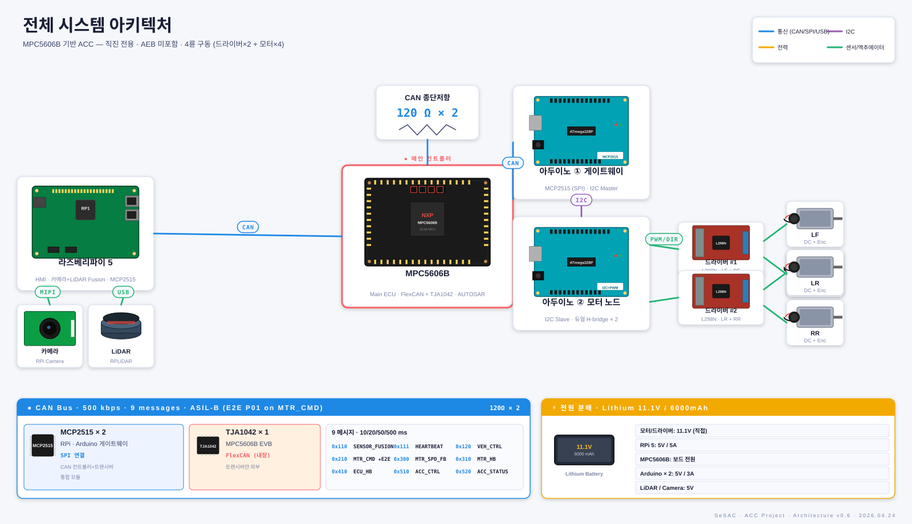

Adaptive Cruise Control (ACC)
1/10 RC카 기반 ACC 시스템 — 주제 · 요구사항 · 인터페이스 · CAN/DBC · AUTOSAR · 검증을 한 권으로 묶은 종합 정리 문서
본 문서는 SeSAC AUTOSAR 과정에서 진행된 1/10 스케일 RC카 기반 ACC(Adaptive Cruise Control) 시스템 개발의 모든 설계 산출물을 한 곳에 정리한 종합 보고서입니다. "왜 이렇게 만들었는가?"라는 질문에 STK ID → SYS ID → SWR ID → SWC.Runnable → 코드 → 테스트케이스의 한 줄 사슬로 답할 수 있도록, 추적성을 잃지 않는 양산 V-모델 한 사이클을 학습 목적으로 따라간 결과물입니다.
01프로젝트 개요
1.1 주제 정의 / 학습 목표
ACC(Adaptive Cruise Control)는 운전자가 설정한 최고속도로 자차를 순항(Cruising)시키되, 전방 차량이 감지되면 자동으로 안전거리를 유지하도록 속도를 줄여 추종(Following)하는 첨단 운전자 보조 시스템(ADAS)의 종방향 제어 기능입니다. 본 프로젝트는 양산을 목적으로 하지 않으며, "양산 SW 개발 프로세스 한 사이클"을 1/10 스케일 RC카 위에서 압축적으로 경험하는 것을 목표로 합니다.
학습 / 포트폴리오
AUTOSAR Classic + ASPICE V-모델 + ISO 26262 안전 체인을 한 번 완주. 실제 양산 프로세스를 미니어처로 경험.
종방향(Longitudinal) 제어만
조향(Steering, LKAS), 자동 비상 제동(AEB), 차선 변경은 모두 범위 외. 직진 전용, 실내 평탄 노면.
추적성
STK → SYS → SWR → SWC.Runnable → 코드 → 테스트케이스가 양방향으로 끊기지 않는 한 줄로 연결.
다층 방어
운전자 브레이크 즉시 우선 + Arduino 30ms 안전 타이머 + FAULT 시 모터 출력 0 (능동감속 없음).
왜 ACC가 학습 주제로 좋은가
ACC는 "양산 SW 프로세스의 압축판"입니다. 다섯 가지 핵심 요소가 모두 들어 있습니다.
- 센서 → 판단 → 제어 → 액추에이터 라는 자율주행의 미니어처 구조 (카메라/LiDAR → ECU → 모터).
- 멀티 노드 분산 시스템 — RPi · ECU · Arduino를 CAN으로 묶어야 하므로 인터페이스 설계가 필수.
- 안전 요구가 명시적이고 측정 가능 — 브레이크 즉시 통과(50ms 이내), 통신 타임아웃 30/60ms 등.
- AUTOSAR가 자연스럽게 매핑 — 주기 태스크 / 상태머신 / 안전 메커니즘이 SWC + Runnable로 그대로.
- 제어 알고리즘이 MBD에 적합 — PID + 상태머신 → Simulink + Stateflow + Embedded Coder 학습.
Scope OUT: AEB(비상 제동), LKAS(조향), 공도 주행, 양산 HW 안전 메트릭(SPFM/LFM/PMHF), ISO 26262 Part 5/7/11.
1.2 적용 표준 — ASPICE 4.0 + ISO 26262:2018
양산 자동차 SW는 두 표준을 동시에 만족해야 합니다. ASPICE는 "어떻게 만들었는가" 를 증명하는 프로세스 표준이고, ISO 26262는 "안전이 충분히 입증되었는가" 를 증명하는 기능안전 표준입니다. 두 표준의 V-모델은 동일한 골격을 공유하므로, 본 프로젝트에서는 두 산출물을 통합 관리합니다.
ASPICE 적용 범위 (테일러링)
4인/1개월 소규모 프로젝트라는 현실을 반영하여, 핵심 V-모델 체인은 모두 거치되 각 단계의 깊이는 조절합니다. 프로세스 적용 수준은 다음과 같습니다.
| 카테고리 | 프로세스 ID | 프로세스명 | 적용 수준 |
|---|---|---|---|
| 관리 | MAN.3 / MAN.5 / MAN.6 | 프로젝트 / 리스크 / 측정 | 전체 / 경량 / 경량 |
| 시스템 | SYS.1 | 요구사항 도출 | 전체 적용 |
| SYS.2 | 시스템 요구사항 분석 | 전체 적용 | |
| SYS.3 | 시스템 아키텍처 설계 | 전체 적용 | |
| SYS.4 | 시스템 통합 테스트 | 부분 (SIL/HIL 대체) | |
| SYS.5 | 시스템 자격 테스트 | 부분 | |
| 소프트웨어 | SWE.1 | SW 요구사항 분석 | 전체 적용 |
| SWE.2 | SW 아키텍처 설계 | 전체 적용 | |
| SWE.3 | SW 상세 설계 및 구현 | 전체 적용 | |
| SWE.4 | SW 단위 검증 | 전체 적용 (MC/DC) | |
| SWE.5 | SW 통합 테스트 | 전체 적용 | |
| SWE.6 | SW 자격 테스트 | 전체 적용 | |
| 하드웨어 | HW.1 ~ HW.4 | HW 요구/설계/검증/통합 | 경량 (HSI 위주) |
| 지원 | SUP.1 / 8 / 9 / 10 | QA / 형상 / 문제 / 변경 | 전체 적용 |
| 밸리데이션 | VAL.1 | 밸리데이션 | 부분 (시나리오 기반) |
ISO 26262 적용 범위 (테일러링)
범용 MCU(NXP MPC5606B + Arduino)를 사용하므로 HW 안전 메트릭(SPFM/LFM/PMHF)은 스코프에서 제외하고, SW가 HW에 기대하는 기능을 HSI(HW/SW Interface) 문서에 가정으로 명시하는 방식으로 정리합니다.
| 파트 | 명칭 | 적용 수준 | 산출물 / 비고 |
|---|---|---|---|
| Part 2 | 안전 관리 | 경량 | P2-SafetyPlan.md (1~2p 간소화) |
| Part 3 | 컨셉 단계 | 전체 적용 | P3-HARA / SafetyGoals / FSC (3 시나리오) |
| Part 4 | 시스템 개발 | 부분 | P4-TSR + P4-HSI (HW 설계 제외) |
| Part 5 | HW 개발 | 제외 | 범용 HW, HSI에 가정 명시 |
| Part 6 | SW 개발 | 전체 적용 | ASPICE SWE와 통합 — ASIL D 기법 적용 |
| Part 7 | 양산/운영 | 제외 | 비양산 프로젝트 |
| Part 8 | 지원 프로세스 | 부분 | ASPICE SUP와 통합 |
| Part 9 | ASIL 분해 | 부분 | SWE.2에 포함 |
| Part 11 | 반도체 | 제외 | 반도체 설계 없음 |
1.3 팀 구성 / 일정 / 마일스톤
ISO 26262 독립성 원칙(Independence Level I1)을 충족하기 위해 안전 산출물의 작성자와 리뷰어를 분리합니다. 품질/안전 엔지니어(D)가 모든 안전 산출물에 대해 Confirmation Review를 수행합니다.
| 역할 | 담당 | 주요 책임 | 주요 산출물 |
|---|---|---|---|
| A 시스템/PM | 시스템 엔지니어 / PM | SYS.1~5, MAN.3/5/6, HARA, Safety Goal, FSC, TSR, 일정 관리 | STK.sdoc, SyRS, P3-*, P4-TSR, MAN.3 계획서 |
| B SW | SW 엔지니어 | SWE.1~6, AUTOSAR/베어메탈 구현, 단위/통합/자격 테스트 | SwRS, SW Arch, SWC .slx, MBD, 테스트 보고서 |
| C HW | HW 엔지니어 | HW.1~4 (경량), HSI, 보드 브링업, 시스템 통합 지원 | HW BOM, P4-HSI, 핀맵, 통합 시나리오 |
| D QA/Safety | 품질/안전 엔지니어 | SUP.1/8/9/10, Safety Plan, Safety Case, Confirmation Review | P2-SafetyPlan, P2-SafetyCase, QA 감사 기록 |
4주 마일스톤
| 주차 | 마일스톤 | 주요 작업 | 산출물 |
|---|---|---|---|
| W1 | 킥오프 + 컨셉 | STK 도출, HARA, Safety Goal, FSC, MAN.3 계획서, P2-SafetyPlan | STK.sdoc, P3-HARA, P3-SafetyGoals, P3-FSC |
| W2 | 설계 (Sys/SW) | SyRS 완성 + TSR, 시스템 아키텍처 + HSI, SwRS + SW 아키텍처, AUTOSAR Dictionary 등록 | SyRS.sdoc, P4-TSR, SysArch.md, SwRS.sdoc, ACC_Types.sldd |
| W3 | 구현 + 단위/통합 | 5 SWC .slx 작성, PID 튜닝, MC/DC 단위 테스트, Arduino/RPi 통합 | 5×SWC.slx, ARXML, 단위 테스트 리포트, 통합 시나리오 12종 |
| W4 | 자격 + 시연 | 시스템 통합/자격 테스트, Safety Case, 발표 자료, 데모 영상 | P2-SafetyCase, 발표 자료, 시연 영상 |
1.4 실제 기여 분석 (git log 기반)
앞 1.3절의 표가 "계획된 역할"이라면, 이 절은 "실제로 어떤 commit을 누가 했는가"를 5개 git 리포지토리(ACC-docs, ACC-CANDB, ACC-autosar, ACC-Arduino, ACC-RPI)의 commit log에서 추출하여 정리한 것입니다.
git history는 거짓말을 하지 않으므로, 누가 어느 모듈에 책임감을 가지고 깊이 들어갔는지가 가장 객관적으로 드러납니다.
1.4.1 contributor 5인
Park JongBeum
dev@parkjb.com · parkjbdev
143 commits (95+8+24+1+17 across 5 repos)
- 전 리포 초기 setup + git submodule 구조 구축
- ASPICE 산출물 95% (STK / SyRS / SwRS · StrictDoc 마이그레이션)
- DBC v1 ~ v3 (E2E P01 도입, RC + CRC8)
- AUTOSAR Composition · CanCommunication · MotorControl · MBD 인프라
- RPi 초기 setup · LiDAR / Camera / YOLO / Fusion 모듈
- mobilgene MPC5606B 설정
Kim Yurim
kimyr8469@ynu.ac.kr · yurim · yurimdl1
25 commits (6+0+4+0+15 across 5 repos)
- RPi HMI 메인 — dashboard 재구성 / 브레이크 슬라이더 → 버튼 / 카메라뷰 정리
- RPi CAN refactor — DBC-driven encode/decode (cantools 도입)
- MTR_SPD_FB (0x300) RX 추가 — HMI 자차속도 표시
- AUTOSAR HmiManager 내부 로직 (4버튼 edge detect + pass-through)
- AUTOSAR Diagnostics SWC 추가 + SWR017 철회 정리
- ACC-docs 페달/CAN 정합 (SWR033, 4휠 토폴로지)
BAE-Jungwoo
BAE-Jungwoo
8 commits (autosar 전담)
- AccStateMachine SWC 전담
- Stateflow FSM 5-state 구현 + enum DataScope 패치
- MVP 정합성 스윕 v0.3 → v0.4 → v0.4.1 → v0.5.2 → v0.5.3
- SWR / SYS 요구사항 갭 분석 + 반영 (SYS001 / 029 / 033 / 034)
- slbuild 경고 정리 + 상류 감사
- AccStateMachine 브랜치 README 작성
dahee
dh4573@naver.com · ekgml4573
9 commits (8 Arduino + 1 autosar)
- Arduino 모터 노드 전담 (Init부터 시스템 분리까지)
- 아두이노 시스템 구조 변경 — 앞/뒤 모터 기준 → CAN/MOTOR 기준 전환
- CAN 피드백 프레임을 I2C 상태와 무관하게 항상 송신 (안정성 fix)
- 구조 분리 (sibling sketch — front/rear)
- AUTOSAR HmiManager v0.3 단순화 (RP_AccStatus 등 4 포트 제거)
Wis3754
wisdome3041@gmail.com
4 commits (1 CANDB + 1 autosar + 2 RPI)
- AUTOSAR DistanceControl SWC 추가 (MBD PID 로직 포함) — 핵심 제어 알고리즘
- CANDB v1 메시지 구조 refactor + 시그널 rename (초기 명세 정리)
- RPi 초기 CAN interface 구현 + rename / 코드 구조 갱신
- 적은 commit이지만 핵심 자산을 던져 놓는 "씨앗" 역할
1.4.2 영역별 commit 매트릭스 (히트맵)
누가 어떤 영역에 깊이 관여했는지 한눈에 보기 위한 히트맵입니다. 짙을수록 commit 수가 많습니다.
1.4.3 영역별 책임 매핑 (실제 기여 기반)
| 영역 | 주 담당 | 보조 | 주요 commit 키워드 |
|---|---|---|---|
| 요구사항 / ASPICE 산출물 STK · SyRS · SwRS · 추적성 |
Park JongBeum (95) | Kim Yurim (6) — SWR033/페달/4휠 정합 | SYS001~034, SWR020~031, StrictDoc 마이그레이션, refactor: organize hierarchy |
| CAN / DBC 설계 메시지 명세 · 시그널 · E2E |
Park JongBeum (8) | Wis3754 (1) — 초기 refactor | DBC v1~v3, E2E P01, RC+CRC8, VEH_DIST uint16, GET_ACC_STATE 분리 |
| AUTOSAR — Composition · CanComm · MotorControl | Park JongBeum (24) | — | 6 SWC composition, ARXML, R2024b 호환, mobilgene config, rebuild_all.m |
| AUTOSAR — AccStateMachine 5-state FSM · Stateflow |
BAE-Jungwoo (8) | — | Stateflow FSM, v0.3→v0.5.3 정합성 스윕, SYS001/029/033/034 갭 반영 |
| AUTOSAR — DistanceControl PID + 안전거리 |
Wis3754 (1) | — | DistanceControl SWC 추가 (MBD PID 로직) |
| AUTOSAR — HmiManager · Diagnostics | Kim Yurim (4) | dahee (1) — v0.3 단순화 | Hmi_Logic 4버튼 edge detect, Diagnostics SWC, SWR017 철회 정리 |
| Arduino 모터 노드 front/rear · CAN · 안전 타이머 |
dahee (8) | Park JongBeum (1) — DBC 정합 fix | 아두이노 시스템 구조 변경, sibling 분리, CAN/I2C, refactor 구조 분리 |
| Raspberry Pi — Fusion · LiDAR · Camera | Park JongBeum (17) | — | YOLO yolo26n, lidar/camera 모듈, fusion 데모, logger, singleton refactor |
| Raspberry Pi — HMI · CanInterface | Kim Yurim (15) | Wis3754 (2) — 초기 CAN, Park JongBeum — refactor | HMI dashboard 재구성, DBC-driven CAN refactor, MTR_SPD_FB RX, cantools 도입 |
1.4.4 시간대별 활동 (commit 시계열)
1.4.5 협업 패턴 — 누가 누구의 산출물 위에서 작업했나
| 의존성 흐름 | 설명 |
|---|---|
| Park JongBeum → BAE-Jungwoo | SyRS / SwRS 작성 → Stateflow FSM 구현 (요구사항 정합성 스윕) |
| Park JongBeum → Wis3754 | AUTOSAR Composition 골격 → DistanceControl SWC 추가 |
| Wis3754 → Kim Yurim | 초기 CAN interface → DBC-driven 으로 refactor |
| Park JongBeum → Kim Yurim | HMI 초기 setup → dashboard 재구성 / 브레이크 슬라이더 → 버튼 |
| Park JongBeum → dahee | Arduino CLAUDE.md → 시스템 구조 변경 / sibling 분리 |
| Park JongBeum (CANDB v3) → dahee, Kim Yurim | DBC 정본화 → 각자 측에서 정합 (CAN/주기 ID 일치) |
| BAE-Jungwoo (FSM v0.5.3) → Park JongBeum | FSM 안정화 → Composition v0.6 / cascaded 제어 도입 |
| dahee (HmiManager v0.3 단순화) → Kim Yurim | HmiManager 4 포트 제거 → Hmi_Logic 내부로직 구현 |
· Park JongBeum이 양쪽 끝의 인프라를 깔고 (요구사항 + AUTOSAR Composition + DBC + RPi 골격), 다른 4명이 그 위에서 각자의 모듈을 채워 넣는 구조.
· Module ownership이 명확 — BAE-Jungwoo는 AccStateMachine 1개만, dahee는 Arduino 1개만, 깊이 있게 책임짐.
· 마지막 1주(4/21~24)에 commit 집중 — 5인 모두 통합 단계에서 동시에 활동, DBC v3 정본화 후 각 모듈이 정합되는 패턴.
· Wis3754는 commit 수는 적지만 DistanceControl이라는 핵심 자산을 던져 놓은 "씨앗" 역할 — commit 수만으로 기여도를 판단하면 안 되는 좋은 예.
1.4.6 1.3절 계획 vs 1.4절 실제 — 어디서 일치/달라졌나
| 계획 역할 (1.3) | 실제 매핑 | 비고 |
|---|---|---|
| A — 시스템 / PM SYS.1~5, MAN.3, HARA, SG, FSC, TSR, 일정 |
Park JongBeum | ✓ 100% 일치 — 압도적 다수 commit으로 정확히 PM 역할 수행 |
| B — SW SWE.1~6, AUTOSAR/베어메탈, 단위/통합/자격 |
Park JongBeum + BAE-Jungwoo + Wis3754 + Kim Yurim (분산 협업) |
한 명이 아닌 4명 분업으로 진행 — SWC 단위 ownership |
| C — HW HW.1~4 (경량), HSI, 보드 브링업 |
dahee (Arduino) + Park JongBeum (RPi 인프라) | HW가 RC카 + Arduino 위주이므로 dahee가 사실상 HW 담당 |
| D — 품질 / 안전 SUP.1/8/9/10, Safety Plan, Confirmation Review, QA 감사 |
(전담자 미지정 — 분산) | Independence I1 충족을 위해 향후 외부 멘토 리뷰 필요 |
SW 영역을 한 명이 아닌 4명이 SWC 단위로 ownership을 가져간 것이 결과적으로 매우 잘 작동했습니다. 각자 자신의 SWC를 깊이 이해하고, BAE-Jungwoo의 "v0.3 → v0.5.3 정합성 스윕" 같은 깊은 리팩터링이 가능했습니다. 단점은 통합 단계에서 인터페이스 정합 비용이 커진 것 — 이를 위해 Park JongBeum이 마지막 주에 DBC v3 정본화 + ARXML composition 정합 작업에 시간을 많이 썼습니다. 양산 환경이라면 별도의 Integration Lead를 두는 것이 정답일 것입니다.
02시스템 구성
2.1 노드 토폴로지 — 1/10 RC카 + 3노드
시스템은 세 개의 컴퓨팅 노드로 분산되어 있고, 모든 노드는 단일 CAN 버스(500 kbps)로 연결됩니다. 센서/HMI는 RPi에, 제어/안전 판단은 ECU에, 모터 인터페이스는 Arduino에 두는 구성입니다. 이 분담은 "무거운 계산은 자원이 풍부한 RPi로, 안전 critical 제어는 인증된 ECU로, 저가 모터 드라이브는 분산 Arduino로"라는 원칙에 따라 결정되었습니다.
2.2 HW Block Diagram — 실제 하드웨어 구성 (v6)
아래 그림은 실제 와이어링 수준에서 본 시스템 구성입니다 (Architecture v0.6 기준). 색상 코딩으로 통신선(블루 = CAN/SPI/USB), I2C(보라 — Arduino 게이트웨이↔모터노드), 제어선(녹색 = 센서/액추에이터 PWM/DIR), 전원선(오렌지 = Power)을 구분합니다. 2-Arduino 토폴로지 — Arduino #1은 CAN 게이트웨이(MCP2515 SPI)이자 I2C Master, Arduino #2는 I2C Slave로 듀얼 H-bridge × 2를 구동합니다. 모든 디지털 통신은 CAN을 거치고, 모터 명령은 ECU → Arduino #1 (CAN) → Arduino #2 (I2C) → L298N x2 → 모터 4개로 전달됩니다.

[그림 2.2-실제] ACC 전체 시스템 아키텍처 v0.6 — MPC5606B 기반 ACC, 2-Arduino 토폴로지 (CAN 게이트웨이 + I2C 모터 노드)📐 단순화된 v1 다이어그램 (참고용 — 클릭하여 펼치기)
2.3 하드웨어 BOM (Bill of Materials)
| 구분 | 구성요소 | 사양 / 모델 | 역할 | 노드 |
|---|---|---|---|---|
| 메인 ECU | NXP TRK-MPC5606B | PowerPC e200z0, 64MHz, AUTOSAR Classic 인증 보드 | ACC 제어 로직 (FSM + PID + 진단) | ECU |
| 보조 MCU | Arduino Uno (x2) | ATmega328P, 16MHz, PWM 6ch | 전륜/후륜 모터 드라이브 + 안전 타이머 | MTR Front / Rear |
| 호스트 | Raspberry Pi 5 | ARM Cortex-A76, 4-Core, 8GB RAM | HMI · Camera/LiDAR Fusion · CAN Gateway | SENSOR |
| 거리 센서 | RPLiDAR A1/A2 | 최대 12m, 360° 스캔 | 전방 차량 거리 측정 (mm 단위) | SENSOR |
| 카메라 | RPi Camera Module 3 | 1080p, Sony IMX708 | 전방 차량 인식 (YOLO/Ultralytics) | SENSOR |
| CAN Controller | MCP2515 + TJA1050 | 8MHz crystal, 500kbps | CAN-SPI 변환 (Arduino, RPi) | 전체 |
| 모터 드라이버 | L298N (x4) | DC 모터 H-Bridge, 2A, IN1/IN2 + EN | 방향 제어 + PWM 속도 제어 | MTR |
| DC 모터 | 엔코더 모터 (x4) | 1/10 RC 스케일, 약 200rpm | 전륜/후륜 4륜 구동 | MTR |
| 전원 | LiPo 배터리 + DC-DC | 11.1V → 모터 / 5V → MCU | 독립 전원 트리 | 공통 |
| 종단 저항 | 120 Ω (x2) | CAN 버스 양 끝 | 임피던스 매칭 / 반사파 흡수 | CAN bus |
| 표시 장치 | FAULT LED | Red, MPC5606B GPIO 직결 | FAULT 상태 시각 경고 | ECU |
2.4 노드별 책임 분담 매트릭스
"누가 무엇을 책임지는가" 를 명확히 하는 것은 기능안전의 출발점입니다. 역할이 모호하면 FAULT 검출 누락이나 중복 처리 등 회색지대가 생깁니다. 아래 표는 각 노드의 IN(담당) / OUT(미포함) 매트릭스입니다.
Raspberry Pi 5
- 카메라/LiDAR 데이터 수신 + 융합
- 전방 차량 검출 + 거리 계산
- 운전자 GUI (버튼, 페달)
- 운전자 입력 → CAN 송신
- ECU 상태 → GUI 표시
- 속도/거리 PID 제어
- FSM 전이 판단
- 안전 모니터링 (FAULT 진입)
NXP MPC5606B
- ACC 5-state FSM
- 속도 / 거리 PID 제어
- 안전거리(THW × Speed) 산출
- 센서/모터 타임아웃 감시
- FAULT 검출 + DTC 기록
- 영상 / LiDAR 신호 처리
- GUI 렌더링
- 모터 직접 PWM 출력
Arduino UNO x2
- ECU 명령 수신 (10ms)
- PWM 4륜 모터 제어
- 엔코더 → 휠속도 피드백
- 30ms 안전 타이머 (모터 정지)
- Heartbeat 발신
- ACC 로직 / 상태 판단
- 센서 처리 / GUI
- 운전자 입력 처리
· RPi: 무거운 영상/거리 융합과 사용자 GUI는 리소스가 풍부한 RPi로 모두 모음 → ECU는 "제어"에만 집중하도록 책임 분리.
· ECU(MPC5606B): AUTOSAR Classic 학습 목적 + ASIL-B 제어 로직을 인증된 자동차 ECU 보드에 배치.
· Arduino x2: 저가형 모터 인터페이스를 분산 → 12V 모터 전원과 ECU 분리 + 30ms 안전 타이머로 dumb actuator 보장.
03요구사항 설계
3.1 요구사항 계층 — STK → SYS → SWR → 코드 → 테스트
요구사항은 위에서 아래로 내려갈수록 구체화되며, 각 레벨에서 ID(STK001, SYS012, SWR011 등)를
부여하여 양방향 추적성을 유지합니다.
요구사항 작성에는 StrictDoc(.sdoc 포맷)을 사용하여 텍스트 기반으로 관리합니다.
3.2 추적성 체인 — V-모델 + 안전 체인
프로젝트에서 유지해야 할 양방향 추적성 체인은 두 갈래입니다. ASPICE V-모델 체인은 "어떻게 만들었나" 를, ISO 26262 안전 체인은 "안전이 어떻게 입증되었나" 를 증명합니다. 두 체인은 SwRS 단계에서 합쳐져 이후의 설계/구현/테스트는 동일한 산출물에서 양쪽 표준을 모두 만족시킵니다.
[ISO 26262 안전 체인]
HARA → Safety Goal → FSC(FSR) → TSR → SwRS(안전) → 설계 → 코드 → 테스트 → Safety Case
[ASPICE V-모델 체인]
이해관계자 요구(SYS.1) → 시스템 요구(SYS.2) → 시스템 아키텍처(SYS.3)
↓
SW 요구(SWE.1) → SW 아키텍처(SWE.2) → 상세설계(SWE.3)
↓ ↓
SW 자격테스트(SWE.6) SW 통합테스트(SWE.5) 단위검증(SWE.4)
↓
시스템 통합테스트(SYS.4) → 시스템 자격테스트(SYS.5) → 밸리데이션(VAL.1)
3.3 STK 핵심 요구사항 카탈로그 (24건 요약)
3.3.1 기능 요구사항
| ID | 제목 | 핵심 내용 | 검증 방법 |
|---|---|---|---|
STK001 | 시스템 목적 | 1/10 RC카 ACC — 전방차 인식 + 차간/속도 자동 제어 | 벤치마킹 / 표준 분석 |
STK002 | 전방 차량 인식 | RPi Camera로 전방차 실시간 검출 | 프로토타이핑 |
STK003 | 차간거리 측정 | RPLiDAR로 전방차까지 거리 (~12m) | 프로토타이핑 |
STK004 | 속도 제어 | 전방차와 안전거리 유지하도록 자동 제어 | 벤치마킹 |
STK005 | 순항 속도 설정 | 최고속도 설정 / 전방차 없으면 그 속도 유지 | 벤치마킹 |
STK006 | 안전거리 단계 | 1~3단계 (CLOSE/MEDIUM/FAR) | 팀 회의 |
STK016 | 자차 속도 측정 | 엔코더 기반 휠속도 → 평균 차속 | 프로토타이핑 |
STK017 | 전방차 속도 추정 | LiDAR 거리 미분 + 자차 속도 조합 | 팀 회의 |
STK018 | SET / RES 재활성화 | STANDBY → SET=현재속도, RES=이전 설정속도 | 벤치마킹 |
STK022 | ACC ON 동작 | 자가진단 통과 → CRUISING/FOLLOWING 즉시 진입 | 사용 시나리오 |
STK024 | 최소 설정속도 | 현재 차속 < 5cm/s 이면 5cm/s 자동 적용 | 벤치마킹 |
3.3.2 안전 / 운영환경 / 제약
| ID | 분류 | 제목 | 핵심 내용 |
|---|---|---|---|
STK007 | 안전 | 브레이크 오버라이드 | 브레이크 누름 → 즉시 STANDBY. 운전자 제동 우선 |
STK008 | 안전 | 액셀 오버라이드 | 액셀 누름 → 즉시 STANDBY. 운전자 가속 우선 |
STK009 | 기능 | ACC 상태 관리 | OFF / STANDBY / CRUISING / FOLLOWING / FAULT |
STK010 | 안전 | 고장 안전 | FAULT 시 모터=0, 운전자 경고, 수동 OFF 필요 |
STK023 | 제약 | AEB 미포함 | 비상 제동 미포함 — 운전자 책임 |
STK011 | 운영환경 | 운영 환경 | 1/10 스케일카, 직진 전용, 실내 평탄 노면 |
STK012 | 인터페이스 | 통신 | 내부 통신 = CAN |
STK013 | 제약 | MCU | 메인=NXP MPC5606B, 모터=Arduino + MCP2515 |
STK014 | 제약 | 개발 표준 | ASPICE + ISO 26262 + AUTOSAR + MATLAB MBD |
STK015 | 제약 | 일정 / 인원 | ~2026.04.30, 5명, Git/Jira/Confluence |
STK019 | 기능 | 입력 버튼 | ACC ON/OFF, SET, RES, 속도+/-, 거리 1/2/3, Pause, 페달 |
STK020 | 기능 | HMI 가상 GUI | RPi GUI — 가상 버튼 + 클러스터 + FAULT 경고 |
STK021 | 기능 | 버튼 가용성 | 상태별 비활성 처리 |
3.4 운전자 입력 정의 (HMI)
HMI는 RPi 위에서 실행되는 PyQt5 GUI 애플리케이션입니다. 물리 버튼은 사용하지 않고 모든 입력을 화면 상의 가상 버튼 + 페달 슬라이더로 처리합니다 (STK020).
| 입력 | 역할 | 트리거 | 활성 상태 |
|---|---|---|---|
| ACC ON / OFF | 토글 — 시스템 ON/OFF | Edge | 모든 상태 |
| SET | 현재 속도를 최고속도로 설정 | Edge | STANDBY |
| RES (Resume) | 이전 설정 최고속도 복원 | Edge | STANDBY |
| 속도 + | 설정 최고속도 증가 | Hold OK | 활성 모드 |
| 속도 − | 설정 최고속도 감소 | Hold OK | 활성 모드 |
| Pause | CRUISING/FOLLOWING → STANDBY | Edge | 활성 모드 |
| 거리 1단계 | CLOSE (THW=0.8s) | Select | 모든 활성 |
| 거리 2단계 | MEDIUM (THW=1.2s) | Select | 모든 활성 |
| 거리 3단계 | FAR (THW=1.6s, 기본값) | Select | 모든 활성 |
| 브레이크 페달 | 누름 유지 → 지속 제동 | Hold | 모든 상태 (ASIL-B) |
| 액셀 페달 | 누름 유지 → 지속 가속 | Hold | 모든 상태 |
버튼 가용성 매트릭스 (STK021)
상태에 따라 일부 버튼은 그레이아웃(비활성) 처리됩니다. 이는 GUI에서 1차 필터링되지만, ECU의 FSM도 비정상 전이를 거부하므로 이중 안전망 역할을 합니다.
| 상태 \ 버튼 | ON/OFF | SET | RES | 속도 ± | 거리 ± | Pause |
|---|---|---|---|---|---|---|
| OFF | ● | — | — | — | — | — |
| STANDBY | ● | ● | ● | — | ● | — |
| CRUISING | ● | — | — | ● | ● | ● |
| FOLLOWING | ● | — | — | ● | ● | ● |
| FAULT | ● | — | — | — | — | — |
● 활성 / — 비활성 (그레이아웃)
3.5 안전거리 모델 — Time Headway (THW)
안전거리는 시간 기반 헤드웨이(Time Headway) 모델로 산출합니다. 거리(cm)는 자차 속도(cm/s)에 시간(s)을 곱한 값이며, 시간 상수는 운전자가 선택한 거리 단계에 따라 결정됩니다.
예시 거리표 (cm 단위)
| v_ego (자차속도) | CLOSE 0.8 s | MED 1.2 s | FAR 1.6 s |
|---|---|---|---|
| 10 cm/s | 8 cm | 12 cm | 16 cm |
| 20 cm/s | 16 cm | 24 cm | 32 cm |
| 30 cm/s | 24 cm | 36 cm | 48 cm |
| 50 cm/s | 40 cm | 60 cm | 80 cm |
| 80 cm/s | 64 cm | 96 cm | 128 cm |
| 100 cm/s | 80 cm | 120 cm | 160 cm |
d_target보다 가까워지더라도 시스템은 "비상 정지" 동작을 수행하지 않습니다. PID 제어로 감속만 시도하며, 위험 상황의 비상 제동은 전적으로 운전자 책임입니다. 이는 1/10 스케일카 + 학습 목적 + ASIL D 회피를 위한 의도된 설계 결정입니다.
상태별 적용 규칙
- FOLLOWING: PID 입력 = (현재 거리 − d_target). 양수면 가속, 음수면 감속.
- CRUISING: 전방차 미감지 → 거리 제어 비활성, 속도 PID로 set_speed 유지.
- STANDBY/FAULT: PID 정지, 모터 출력 = 0. 능동 감속 없음 — 자연 감속만.
- 매 10 ms마다 d_target 재계산 (
RE_TargetDistCalc, ASIL-B 파티션).
3.5.1 ACC ON 동작 흐름 (STK022)
운전자가 ACC ON/OFF 토글 버튼을 눌렀을 때의 동작 시퀀스입니다. 일반적인 ACC와 달리 STANDBY 단계를 우회하고 곧바로 활성 모드로 진입합니다.
04시스템 아키텍처
4.1 노드 분담 결정 근거
세 노드의 분담은 단순한 "리소스 풍부도" 가 아니라 안전 등급(ASIL) · 인증된 HW · 학습 목적 · 전원 분리의 다섯 가지 축을 모두 고려한 결과입니다. 아래 표는 각 노드를 선택한 정량/정성 근거입니다.
| 노드 | 선택 이유 (Pros) | 제약 (Cons) | 대안 검토 |
|---|---|---|---|
| RPi 5 | · 64-bit ARM, 8GB RAM — YOLO/OpenCV 동작 · Python 생태계 풍부 · HDMI 출력으로 GUI 즉시 |
· 비실시간 OS · 부팅 시간 · 전원 1A+ 필요 |
Jetson Nano (가격↑) / NUC (전력↑) |
| NXP MPC5606B | · AUTOSAR Classic 인증 보드 · 자동차 ECU 학습 목적 부합 · FlexCAN, FlexRay 내장 |
· 64MHz, FPU 없음 · 학습 곡선 가파름 · mobilgene 라이센스 필요 |
STM32 (저비용) / TC275 (Aurix, 양산급) |
| Arduino UNO x2 | · 모터 구동에 충분 · MCP2515 시너지 · 저렴, 부서져도 교체 쉬움 |
· 8-bit, 16MHz · PWM 핀 6개로 빡빡함 · INT 핀 부족 (D2/D3) |
Raspberry Pi Pico (RP2040, 더 빠름) |
분산 vs 통합 결정
"왜 모든 처리를 하나의 강력한 보드(예: Jetson)에 모으지 않았나?" 라는 질문에 대한 답은 다음과 같습니다.
- 역할 분리(Separation of Concerns): 안전 critical 제어와 영상 처리는 다른 ASIL을 가지므로 같은 칩에 두면 ASIL Decomposition을 위한 공간 분리가 필요합니다. 노드 분리가 더 깔끔합니다.
- 학습 목적: 분산 시스템 + CAN 통신은 양산 자동차의 표준 구조이므로 그대로 따라가는 것이 학습 가치가 높습니다.
- 인증 vs 비인증 분리: ASIL-B 코드(ECU)는 AUTOSAR 인증된 환경에서, ASIL 없는 코드(GUI/Vision)는 자유로운 Python 환경에서 작성하기 위함입니다.
- HW 안전: Arduino를 dumb actuator로 두면 ECU/RPi가 죽어도 30ms 안전 타이머가 모터를 멈춥니다. 통합되어 있으면 SW 단일 장애점.
4.2 ACC 5-state FSM
ACC의 동작 척추는 5개 상태로 구성된 유한 상태 기계입니다.
이 FSM은 AccStateMachine SWC의 RE_FsmStep Runnable이 10ms마다 평가합니다.
· Motor = 0 (능동 감속 없음 — 자연 감속만)
· HMI 경고 표시 (FAULT LED + GUI 빨간 배너)
· DTC 기록 (Diagnostic Trouble Code 영구 저장)
· 운전자가 ACC ON/OFF 버튼으로 OFF 전환해야 해제 (자동 복구 없음)
4.3 상태 전이 테이블
모든 상태 전이는 10ms 주기의 RE_FsmStep 한 틱 안에 평가됩니다.
같은 틱에서 RE_OverrideCheck가 먼저 실행되므로, 브레이크/액셀 입력은 같은 틱 안에 STANDBY 전이로 반영됩니다.
| From | To | Trigger / Guard | 근거 SWR / STK |
|---|---|---|---|
| OFF | STANDBY | BtnOnOff ∧ SelfDiagPass ∧ ¬BrakePressed ∧ ¬AccelPressed | SWR029 / STK022 |
| OFF | OFF | BtnOnOff ∧ (BrakePressed ∨ AccelPressed) — 사전조건 실패 | SWR029 |
| OFF | FAULT | SelfDiagFail (자가진단 실패) | SWR016 / STK010 |
| STANDBY | CRUISING | (BtnSet ∨ BtnRes) ∧ ¬FwdVehicleDetected ∧ SetSpeed ≥ 5cm/s | SWR026 / STK018 / SWR031 |
| STANDBY | FOLLOWING | (BtnSet ∨ BtnRes) ∧ FwdVehicleDetected | SWR026 / STK018 |
| STANDBY | OFF | BtnOnOff | STK019 |
| CRUISING | FOLLOWING | FwdVehicleDetected (가드 자동 전이) | SWR010 |
| FOLLOWING | CRUISING | ¬FwdVehicleDetected | SWR011 |
| CRUISING | STANDBY | BrakePressed ∨ AccelPressed ∨ BtnPause | SWR002 / SWR003 / SWR027 |
| FOLLOWING | STANDBY | BrakePressed ∨ AccelPressed ∨ BtnPause | SWR002 / SWR003 / SWR027 |
| * (any active) | FAULT | FaultActive (Diagnostics 판단) | SWR016 / STK010 |
| FAULT | OFF | BtnOnOff (운전자 수동 해제) | SWR016 / STK010 |
05인터페이스 · CAN · DBC
5.1 CAN 메시지 흐름 — DBC v3.3 (Project.dbc 정본)
시스템의 모든 노드 간 통신은 단일 CAN 버스(500 kbps, Standard 11-bit ID)를 통과합니다.
DBC v3.3 정본(Project.dbc)은 mobilgene 교육용 베이스 30개 메시지에 ACC 전용 9개 메시지를 머지한 통합본입니다.
ACC 단독 시뮬레이션에는 acc_db.dbc(9 메시지)를, mobilgene/CANoe 통합에는 Project.dbc(39 메시지)를 사용합니다.
Project.dbc 통합 시 0x300 ECU1_Msg_PIF1·NM 예약범위 0x400~0x47F를 회피하여
MTR_SPD_FB 0x300→0x310, MTR_HEARTBEAT 0x310→0x320, ECU_HEARTBEAT 0x410→0x480으로 이동했습니다.
노드명도 ECU → ECU1로 통일되었습니다.
5.2 메시지 카탈로그 (9개, DBC v3.3)
| CAN ID | 이름 | 송신 → 수신 | DLC | 주기 | ASIL | 용도 / 근거 |
|---|---|---|---|---|---|---|
0x110272 | SENSOR_FUSION | SENSOR → ECU1 | 3 | 20 ms | QM | 전방차 감지 + 거리 (LiDAR/Camera 융합) — SYS015 |
0x111273 | SENSOR_HEARTBEAT | SENSOR → ECU1 | 2 | 20 ms | QM | RPi 노드 heartbeat + ERR — SYS025 |
0x120288 | VEH_CTRL | SENSOR → ECU1 | 2 | 20 ms | B | 차량 직접 조작 (브레이크 + 수동 액셀) — SAF004/015 ASIL-B 50ms 응답 |
0x210528 | MTR_CMD +E2E | ECU1 → MTR | 6 | 10 ms | B | 4륜 PWM + RC + CRC8 (E2E P01) — SYS016 + SAF010 |
0x310784 | MTR_SPD_FB | MTR → ECU1, SENSOR | 8 | 10 ms | QM | 멀티캐스트: AVG → MC inner PI(SWR034) + HMI 표시(SYS019). 4륜 시그널 예약 |
0x320800 | MTR_HEARTBEAT | MTR → ECU1 | 2 | 10 ms | QM | 모터 노드 heartbeat + ERR — SYS025 |
0x4801152 | ECU_HEARTBEAT | ECU1 → SENSOR, MTR | 2 | 10 ms | B | ASIL-B 승격 (10ms 빠른 주기) — SAF018 TSR-07 (3주기 미수신=30ms → FAULT) |
0x5101296 | ACC_CTRL | SENSOR → ECU1 | 4 | 50 ms | QM | ACC feature 버튼 (ON/OFF/SET/RES/CANCEL + set_speed + dist_level) — SYS030 |
0x5201312 | ACC_STATUS | ECU1 → SENSOR | 4 | 50 ms | QM | HMI 표시용 (state + set_speed + dist_level) — SYS031. 차속은 0x310에서 별도 수신 |
· SENSOR_ACC_CMD 분리: 안전 critical(브레이크/액셀)을
VEH_CTRL(20ms ASIL-B)로, ACC feature 버튼을 ACC_CTRL(50ms QM)로 분리.· Heartbeat 가속화: 500ms → 10/20ms로 모두 빨라짐. 특히
ECU_HEARTBEAT는 ASIL-B로 승격 (SAF018, 30ms 타임아웃).· MTR_SPD_FB 멀티캐스트: ECU1(MC inner PI 입력) + SENSOR(HMI 표시)가 동시 수신 —
ACC_STATUS에서 차속 시그널 제거.· MTR_CMD에 E2E P01 추가: Rolling Counter 4비트 + CRC8 (AUTOSAR poly 0x2F).
5.3 메시지별 시그널 상세
5.3.1 0x110 SENSOR_FUSION (SENSOR → ECU1, 20 ms)
LiDAR + Camera 융합 데이터. 상대속도는 ECU 내부에서 거리 미분 + 자차속도로 산출 (SYS013).
| 시그널 | 비트 | 타입 | 단위 | 범위 | 비고 |
|---|---|---|---|---|---|
| VEH_DET | 0:1 | bool | - | 0/1 | 전방차 감지 (0 시 VEH_DIST 무시) |
| VEH_DIST | 8:16 | uint16 | mm | 0 ~ 12000 | RPLiDAR 최대 12m. VEH_DET=0 시 송신 0 |
5.3.2 0x111 SENSOR_HEARTBEAT (SENSOR → ECU1, 20 ms)
| 시그널 | 비트 | 타입 | 비고 |
|---|---|---|---|
| HB_SENSOR | 0:8 | uint8 | RPi 노드 heartbeat 카운터 |
| ERR_SENSOR | 8:8 | uint8 | 0=Normal, ≠0=Error code |
5.3.3 0x120 VEH_CTRL (SENSOR → ECU1, 20 ms, ASIL-B 경로)
차량 직접 조작 입력 (브레이크 + 수동 액셀 슬라이더). SAF004/015 (오버라이드 50ms 이내). E2E 미적용 — 타임아웃·수신측 검증으로 커버.
| 시그널 | 비트 | 타입 | 단위 | 범위 | 비고 |
|---|---|---|---|---|---|
| SET_ACCEL_PWM | 0:8 | int8 | - | -128 ~ 127 | 수동 가속 PWM (STANDBY/OFF, SWR033). 음수=후진(확장) |
| BTN_BRAKE | 8:1 | bool | - | 0/1 | Level-triggered (SAF004 ASIL-B) |
5.3.4 0x210 MTR_CMD (ECU1 → MTR, 10 ms, ASIL-B + E2E P01)
4륜 모터 PWM 명령. AUTOSAR E2E Profile 01 적용 (SAF010 TSR-02). 수신측 Arduino는 CRC/카운터 검증 실패 시 프레임 무효 + 30ms 타임아웃(SWR018) → 모터 출력 0 safe state.
| 시그널 | 비트 | 타입 | 범위 | 비고 |
|---|---|---|---|---|
| SET_PWM_LF | 0:8 | int8 | -128 ~ 127 | Left-Front |
| SET_PWM_RF | 8:8 | int8 | -128 ~ 127 | Right-Front |
| SET_PWM_LR | 16:8 | int8 | -128 ~ 127 | Left-Rear |
| SET_PWM_RR | 24:8 | int8 | -128 ~ 127 | Right-Rear |
| MTR_RC | 32:4 | uint4 | 0 ~ 15 | Rolling Counter (매 송신 +1) |
| MTR_CRC | 40:8 | uint8 | 0 ~ 255 | CRC-8 (AUTOSAR poly 0x2F, init 0xFF) |
5.3.5 0x310 MTR_SPD_FB (MTR → ECU1 + SENSOR, 10 ms, 멀티캐스트)
엔코더 기반 속도 피드백. 한 프레임에 대표 차속(AVG, 고정밀) + 4륜 개별 속도(예약)를 함께 담아 송신. signal-level multicast — AVG는 ECU+SENSOR 둘 다, 4륜은 ECU만.
| 시그널 | 비트 | 타입 | 단위 | 범위 | 수신자 / 용도 |
|---|---|---|---|---|---|
| GET_SPD_AVG | 0:16 | int16 × 0.02 | cm/s | -650 ~ 650 | ECU + SENSOR — MC PI 입력(SWR034) + HMI 표시(SYS019) |
| GET_SPD_LF | 16:12 | int12 × 0.3 | cm/s | -614 ~ 614 | ECU (현재 미사용 — 4륜 확장/디버그 예약) |
| GET_SPD_RF | 28:12 | int12 × 0.3 | cm/s | -614 ~ 614 | ECU (예약) |
| GET_SPD_LR | 40:12 | int12 × 0.3 | cm/s | -614 ~ 614 | ECU (예약) |
| GET_SPD_RR | 52:12 | int12 × 0.3 | cm/s | -614 ~ 614 | ECU (예약) |
SO18ED9TC35S-15 (1590 RPM @12V) + 65mm 바퀴 → 이론 최고속 ~541 cm/s. AVG는 ±650 cm/s 여유, 4륜은 int12 @ 0.3 cm/s로 축소(DLC 8 포화 우회).
5.3.6 0x320 MTR_HEARTBEAT (MTR → ECU1, 10 ms)
| 시그널 | 비트 | 타입 | 비고 |
|---|---|---|---|
| HB_MTR | 0:8 | uint8 | 모터 노드 heartbeat 카운터 |
| ERR_MTR | 8:8 | uint8 | 0=Normal, ≠0=Error code |
5.3.7 0x480 ECU_HEARTBEAT (ECU1 → SENSOR + MTR, 10 ms, ASIL-B)
SAF018 TSR-07: 10ms 이내 주기 송신. 타임아웃(3주기 미수신=30ms) 시 수신 노드는 FAULT 전이.
| 시그널 | 비트 | 타입 | 비고 |
|---|---|---|---|
| HB_ECU | 0:8 | uint8 | ECU heartbeat 카운터 |
| ERR_ECU | 8:8 | uint8 | 0=Normal, ≠0=Error code |
5.3.8 0x510 ACC_CTRL (SENSOR → ECU1, 50 ms)
ACC feature 운전자 입력 (ACC 버튼 + 설정값). 브레이크/액셀은 별도 VEH_CTRL(0x120)에서 처리.
| 시그널 | 비트 | 타입 | 단위 | 범위 | 비고 |
|---|---|---|---|---|---|
| BTN_ACC_OFF | 0:1 | bool | - | 0/1 | Edge trigger (ACC ON/OFF 토글) |
| BTN_ACC_SET | 1:1 | bool | - | 0/1 | STANDBY 에서만 유효 |
| BTN_ACC_RES | 2:1 | bool | - | 0/1 | STANDBY 에서만 유효 |
| BTN_ACC_CANCEL | 3:1 | bool | - | 0/1 | CRUISING/FOLLOWING 에서만 |
| SET_ACC_SPD | 8:16 | int16 | cm/s | -500 ~ 500 | 목표 속도 (절대값) |
| SET_ACC_LVL | 24:8 | enum | - | 1/2/3 | 1=CLOSE / 2=MEDIUM / 3=FAR |
5.3.9 0x520 ACC_STATUS (ECU1 → SENSOR, 50 ms, HMI 표시용)
차속은 이 메시지에 포함되지 않음 — MTR_SPD_FB(0x310)의 GET_SPD_AVG에서 직접 수신. SYS031.
| 시그널 | 비트 | 타입 | 단위 | 의미 |
|---|---|---|---|---|
| GET_ACC_STATE | 0:8 | enum | - | 0=OFF / 1=STANDBY / 2=CRUISING / 3=FOLLOWING / 4=FAULT |
| GET_ACC_SPD | 8:16 | int16 | cm/s | 현재 설정 속도 |
| GET_ACC_LVL | 24:8 | enum | - | 차간 레벨 (1/2/3) |
5.4 DBC 파일 구조
DBC(Database CAN)는 CAN 메시지의 데이터베이스 파일입니다. Vector사가 정의한 사실상의 표준이며, CANalyzer/CANoe/PCAN-View 등 모든 CAN 도구가 읽을 수 있습니다.
키워드 구조
| 키워드 | 역할 | 예시 |
|---|---|---|
BU_ | Bus Units (노드 정의) | BU_: SENSOR ECU MTR |
BO_ | Message (Bus Object) | BO_ 256 SENSOR_ACC_CMD: 8 SENSOR |
SG_ | Signal — 비트/길이/스케일 | SG_ SET_ACC_SPD : 16|8@1+ (-128,0) |
CM_ | Comment (BU/BO/SG에 부착) | CM_ BO_ 256 "ACC control commands"; |
VAL_ | Value Table (enum text) | VAL_ 256 SET_ACC_LVL 1 "CLOSE" ...; |
BA_DEF_ | Attribute Definition | BA_DEF_ BO_ "GenMsgCycleTime" INT 0 10000; |
BA_ | Attribute Value | BA_ "GenMsgCycleTime" BO_ 256 20; |
실제 DBC 발췌
VERSION ""
NS_ : ...
BS_:
BU_: SENSOR ECU MTR
BO_ 256 SENSOR_ACC_CMD: 8 SENSOR
SG_ SET_ACCEL_PWM : 0|8@1+ (-128,0) [-128|127] "" ECU
SG_ BTN_BRAKE : 8|1@1+ (1,0) [0|1] "" ECU
SG_ SET_ACC_SPD : 16|8@1+ (-128,0) [-128|127] "cm/s" ECU
SG_ SET_ACC_LVL : 24|8@1+ (1,0) [1|3] "" ECU
BO_ 768 MTR_SPD_FB: 8 MTR
SG_ GET_SPD_LF : 0|16@1+ (0.01,0) [-327.68|327.67] "cm/s" ECU
SG_ GET_SPD_RF : 16|16@1+ (0.01,0) [-327.68|327.67] "cm/s" ECU
...
VAL_ 1024 GET_ACC_STATUS
0 "OFF" 1 "STANDBY" 2 "CRUISING" 3 "FOLLOWING" 4 "FAULT";
VAL_ 256 SET_ACC_LVL 1 "CLOSE" 2 "MEDIUM" 3 "FAR";
BA_DEF_ BO_ "GenMsgCycleTime" INT 0 10000;
BA_DEF_DEF_ "GenMsgCycleTime" 100;
BA_ "GenMsgCycleTime" BO_ 256 20;
BA_ "GenMsgCycleTime" BO_ 512 10;
BA_ "GenMsgCycleTime" BO_ 1024 50;
SG_ SET_ACC_SPD : 16|8@1+ (-128,0) [-128|127] "cm/s" ECU· 16|8: 시작비트 16부터 8비트 길이
· @1+: little-endian (Intel), unsigned (실제 sint8이지만 offset으로 표현)
· (-128,0): physical = raw × 1 + (-128). 즉 raw 0~255 → physical -128~127
· [-128|127]: 물리값 범위
· "cm/s": 단위
· ECU: 수신 노드
5.5 CAN ↔ AUTOSAR RTE 매핑
CAN 시그널은 BSW의 Com 모듈에서 디코드되고, RTE를 통해 ASW SWC의 인터페이스로 전달됩니다.
물리 시그널과 SWC Port의 매핑은 다음과 같습니다.
| CAN ID | 방향 | 주요 시그널 | ASW 인터페이스 | SWC Port (v0.8 — 6 SWC) |
|---|---|---|---|---|
0x110 | RPi → ECU1 | VEH_DET, VEH_DIST | IF_SensorData (Bus) | CanComm.PP_SensorData → DistCtl / FSM / Diag |
0x111 | RPi → ECU1 | HB_SENSOR, ERR_SENSOR | IF_SensorBus (HB) | CanComm.PP_SensorHb → Diag (HB 모니터) |
0x120 | RPi → ECU1 | SET_ACCEL_PWM, BTN_BRAKE | IF_VehCtrl | CanComm.PP_VehCtrl → Hmi/FSM/MotorControl (SWR033) |
0x210 | ECU1 → MTR | SET_PWM_LF/RF/LR/RR + RC + CRC | IF_MotorCmd (E2E P01) | MotorControl.PP_MotorCmd → CanComm.RP_MotorCmd |
0x310 | MTR → ECU1+SENSOR | GET_SPD_AVG (대표) + 4륜(예약) | IF_SensorData (EgoSpeedCmS) | CanComm.PP_SensorData → MotorControl (PI 입력) |
0x320 | MTR → ECU1 | HB_MTR, ERR_MTR | IF_MtrBus (HB) | CanComm.PP_MtrHb → Diag (HB 모니터) |
0x480 | ECU1 → ALL B | HB_ECU, ERR_ECU | IF_DiagStatus | Diag.PP_EcuHb → CanComm (책임 인계, SAF018) |
0x510 | RPi → ECU1 | BTN_ACC_*, SET_ACC_SPD, SET_ACC_LVL | IF_HmiBtn / IF_AccCtrl | CanComm.PP_AccCtrl → Hmi → FSM |
0x520 | ECU1 → RPi | GET_ACC_STATE, GET_ACC_SPD, GET_ACC_LVL | IF_AccStatus | FSM.PP_AccStatus → CanComm.RP_AccStatus |
IF_*Bus) + 5개 intra-ECU.
DBC 시그널 ↔ AUTOSAR 인터페이스 매핑은 mobilgene Data Mappings UI에서 35개 매핑으로 처리 (수동 import).
Diagnostics SWC가 ECU heartbeat 송신 책임을 인계받음 (이전 CanComm).
5.6 안전 정책 — E2E · Heartbeat · Timeout
한 메시지가 사라져도, 한 노드가 죽어도 시스템이 안전하게 멈출 수 있도록 세 겹 방어를 적용합니다.
End-to-End Protection
(Profile P01)
- 0x210 MTR_CMD에만 적용 (안전 critical TX, ASIL-B)
- CRC8 (AUTOSAR poly 0x2F) + Rolling Counter 4비트
- Arduino는 AUTOSAR 미적용 — 동일 polynomial 수동 구현
- RX 시 CRC 검증 실패 → 프레임 drop + ERR_CHECKSUM
- 현재 송수신 로직 미구현 — DBC 자리 예약, 30ms 타임아웃으로 ASIL-B 보호
Heartbeat Monitoring (가속화)
- SENSOR/MTR: 20/10ms 주기 (이전 500ms)
- ECU: 10ms ASIL-B (이전 500ms QM, SAF018)
- 0x111 (SENSOR, 20ms) / 0x320 (MTR, 10ms) / 0x480 (ECU, 10ms ASIL-B)
- v0.8: ECU HB 송신 책임이 Diag SWC로 이전
- 30ms (3 cycle) 미수신 → FAULT 전이
Timeout / FAULT 진입
- 0x110 SENSOR_FUSION 미수신 60ms → SensorTimeoutFlag
- 0x310 MTR_SPD_FB 미수신 30ms → MotorTimeoutFlag
- 0x480 ECU_HEARTBEAT 미수신 30ms → 노드 fail-safe
- Arduino 측 30ms ASIL-B 타이머 → 모터 즉시 정지
- Diagnostics OR → FaultCode → FAULT 진입
FAULT 진입 흐름 (다층 방어)
06AUTOSAR 설계 (ECU) — v0.8
ECU(MPC5606B)에서 동작하는 ASW(Application SW)는 AUTOSAR Classic 4.x 표준에 따라 설계되었습니다. v0.8 기준으로 6개의 SWC(Software Component)가 13개 Sender-Receiver Interface(8개 bus-binding + 5개 intra-ECU), 4개 Client-Server Interface, 1개 Mode-Switch Interface로 연결됩니다. RTE(Runtime Environment)를 통해 BSW와 분리되며, DBC ↔ AUTOSAR 매핑은 mobilgene Data Mappings UI(35 매핑)로 처리합니다.
MotorControl SWC가 신설되어 5 → 6 SWC가 되었습니다 (cascaded 2-loop 구조).
DC(DistanceControl) outer 20ms + MC(MotorControl) inner 10ms 속도 PI로 분리되어 대역폭 간섭이 최소화되었습니다.
또한 v0.8에서 Composition이 5 SWC + 7 connector(intra-ECU만)로 정리되었고, Diagnostics가 ECU heartbeat 송신 책임을 인계받았습니다 (SAF018 ASIL-B).
6.1 6 SWC Top-Level Composition (v0.8)
| SWC | ASIL | 주요 책임 | 주기 / Runnable |
|---|---|---|---|
| CanCommunication | B | CAN RX/TX 시그널 ↔ RTE IF · Timeout 감시 | 10/20/50 ms · 7+ Runnable |
| AccStateMachine | B | 5-state FSM · 오버라이드 · NvM 보존 · Stateflow 구현 | 10 ms · OverrideCheck + FsmStep |
| DistanceControl (DC, outer) | B mixed | 거리 → 목표속도 변환 (THW × Speed) · 거리 PID + anti-windup | 20 ms · TargetDistCalc + DistPid |
| MotorControl (MC, inner) ★ NEW | B mixed | 목표속도 → PWM 변환 · inner-loop 속도 PI · STANDBY/OFF 수동 PWM pass-through (SWR033) | 10 ms · SpeedPi + PwmShape |
| Diagnostics | B mixed | FAULT 검출 · HB 모니터(SENSOR/MTR) · ECU HB 송신(SAF018 v0.8) | 10 ms · FaultDetect + HbTx |
| HmiManager | QM | 버튼 edge detect + pass-through · DriverReq 생성 | 50 ms · HmiStep |
IF_CtrlOutput.TargetSpeedCmS → MotorControl(10ms inner) → MTR_CMDDC와 MC를 2× 주기 비율로 분리해 대역폭 간섭을 최소화하고, MC는 GET_SPD_AVG(MTR_SPD_FB)를 실속도 입력으로 받아 속도 PI를 수행합니다.
6.2 Sender-Receiver Interface 카탈로그 (v0.8 — 13개)
v0.8에서 SR 인터페이스가 13개로 정리됨 — 8개 bus-binding (IF_*Bus) + 5개 intra-ECU. CAN bus와의 직접 매핑은 mobilgene Data Mappings UI(35 매핑)로 처리. 아래는 ASW SWC 간 데이터 흐름 핵심 7개의 요약입니다.
| Interface | Data Elements | 생산 | 소비 | 근거 SWR |
|---|---|---|---|---|
IF_SensorData | FwdDistanceCm, FwdVehicleDetected, RelVelocityCmS, EgoSpeedCmS, RaspiErrCode, StmErrCode, SensorTimeoutFlag, MotorTimeoutFlag | CanComm | FSM, DistCtl, Diag | SWR004/007/013/014/015 |
IF_AccSetpoint | SetSpeedCmS, DistanceLevel, CtrlMode | FSM | DistCtl | SWR010/011/031 |
IF_AccStatus | AccState, SetSpeedCmS, DistanceLevel, BtnAvailability | FSM | Hmi, CanComm | SWR001/028 |
IF_DriverReq | BtnOnOff, BtnSet, BtnRes, BtnPause, DistLevelReq, SetSpeedReq, BrakePressed, AccelPressed | Hmi | FSM | SWR002/003/020/026/027 |
IF_MotorCmd | TargetPwmDuty, TargetSpeedCmS, CmdValid | DistCtl | CanComm | SWR009/012 |
IF_DiagStatus | FaultActive, FaultCode, FaultSource | Diag | FSM, Hmi, CanComm | SWR016 |
IF_HmiBtn | RawBtnBitmap, DistLevelReq, SetSpeedReq, GuiSeqCounter, BrakePressed, AccelPressed | CanComm | Hmi | SWR002/003/020/030 |
6.3 Client-Server Interface + Mode-Switch
Client-Server Interface (BSW 서비스 호출)
| Interface | Operation | Client | Server | 근거 |
|---|---|---|---|---|
CS_Dem | SetEventStatus(EventId, Status) | Diag | Dem (BSW) | SWR017 — DTC 기록 |
CS_WdgM | CheckpointReached(SupId, CpId) | FSM, DistCtl, CanComm | WdgM (BSW) | ISO 26262 안전 |
CS_Dcm_Custom | ReadDid_F1A0_AccVer | Dcm (BSW) | Diag | SWR017 — UDS callback |
CS_NvM | WriteBlock / ReadBlock | FSM | NvM (BSW) | SWR002 보존, SWR026 복원 |
Mode-Switch Interface
| Interface | Mode Group | Modes | Provider | Users |
|---|---|---|---|---|
MS_AccMode | MDG_AccMode | OFF / STANDBY / CRUISING / FOLLOWING / FAULT | AccStateMachine | DistanceControl, Diagnostics |
6.4 DataType / Enum 카탈로그 (ACC_Types.sldd)
Enum (TEXTTABLE CompuMethod)
AccState_T : uint8 0 = ACC_OFF 1 = ACC_STANDBY 2 = ACC_CRUISING 3 = ACC_FOLLOWING 4 = ACC_FAULT DistLevel_T : uint8 1 = LEVEL1 (THW=0.8s) 2 = LEVEL2 (THW=1.2s) 3 = LEVEL3 (THW=1.6s, default) CtrlMode_T : uint8 0 = CTRL_DISABLED 1 = CTRL_SPEED (CRUISING) 2 = CTRL_DISTANCE (FOLLOWING) FaultCode_T : uint16 0x0000 NO_FAULT 0x0101 ERR_SENSOR_TIMEOUT 0x0102 ERR_SENSOR_RPI 0x0201 ERR_MOTOR_TIMEOUT 0x0202 ERR_MOTOR_STM 0x0301 ERR_ECU 0x0302 ERR_ECU_WDG
Physical Scaling (LINEAR)
| AppType | ImplType | Factor | Unit |
|---|---|---|---|
| DistanceCm | uint8 | 1.0 | cm |
| SpeedCmS | uint16 | 1.0 | cm/s |
| RelSpeedCmS | sint16 | 1.0 | cm/s |
| PwmDuty | sint16 | 0.01 | % |
Inter-Runnable Variables (DistCtl 내부)
| IRV | Type | 용도 |
|---|---|---|
| Irv_PidIntegrator | float32 | PID 적분항 (anti-windup) |
| Irv_PidPrevError | float32 | 미분항 계산용 |
| Irv_LastTargetDist | uint16 | 모드 전환 bumpless |
※ float32_t는 IRV 내부에서만 허용 — MPC5606B는 FPU 없음
6.5 SWC 상세 — 5개
6.5.1 AccStateMachine ASIL-B
FSM 본체 + 오버라이드 + NvM 설정 보존을 담당하는 핵심 SWC. RE_OverrideCheck는 우선순위 최상으로 매 10ms 틱의 처음에 실행되어, 브레이크 입력에 대한 50ms 안전 한계를 보장합니다.
Ports
| Port | Dir | IF |
|---|---|---|
| PP_AccStatus | P | IF_AccStatus |
| PP_AccSetpoint | P | IF_AccSetpoint |
| PP_AccMode | P (Mode) | MS_AccMode |
| RP_SensorData | R | IF_SensorData |
| RP_DriverReq | R | IF_DriverReq |
| RP_DiagStatus | R | IF_DiagStatus |
| RP_NvM | R (C-S) | CS_NvM |
| RP_WdgM | R (C-S) | CS_WdgM |
Runnables
브레이크(SWR002, ASIL-B) / 액셀(SWR003, QM) edge 감지 → 즉시 STANDBY.
10ms 태스크 내 최초 실행으로 50ms 안전 한계 보장.
SWR001 5-state 전이 평가. RE_OverrideCheck 직후 실행 — 같은 틱에서 STANDBY 진입 가능. SetSpeed 보존(NvM Write)/복원(NvM Read).
6.5.2 DistanceControl ASIL-B mixed Simulink MBD
안전거리 산출 + 속도/거리 PID 제어. Simulink로 구현하고 Embedded Coder로 C 생성. Multiport Switch로 CtrlMode에 따라 Speed PID와 Distance PID 분기.
| Runnable | 주기 | 로직 | 근거 |
|---|---|---|---|
| RE_TargetDistCalc | 10ms | d_target = THW(level) × EgoSpeed | SWR008 |
| RE_PidStep | 10ms | CtrlMode=SPEED/DISTANCE 분기 + anti-windup MS_AccMode가 STANDBY/FAULT면 motor=0 강제 | SWR009/010/011 |
6.5.3 CanCommunication ASIL-B
CAN 시그널 ↔ RTE 인터페이스 변환 + 타임아웃 감시. 7개 Runnable이 4개 OS Task에 분산 배치되어 주기를 맞춥니다.
| Runnable | 주기 | 역할 |
|---|---|---|
| RE_CanRxSensor | 20 ms | 0x110 SENSOR_FUSION 디코드 → IF_SensorData |
| RE_CanRxMotor | 10 ms | 0x300 MTR_SPD_FB → EgoSpeed 갱신 |
| RE_CanRxGui | 50 ms | 0x100 SENSOR_ACC_CMD → IF_HmiBtn |
| RE_CanTxMotor | 10 ms | IF_MotorCmd → 0x200 인코드 |
| RE_CanTxHb | 20 ms | IF_DiagStatus → 0x410 ECU_HEARTBEAT |
| RE_CanTxGui | 50 ms | IF_AccStatus + IF_DiagStatus → 0x400 |
| RE_TimeoutMonitor | 10 ms | 각 메시지별 타임아웃 카운터 + 플래그 |
| 모니터링 메시지 | Timeout | 액션 | ASIL |
|---|---|---|---|
| 0x110 SENSOR_FUSION | 60 ms | SensorTimeoutFlag = TRUE | B |
| 0x300 MTR_SPD_FB | 30 ms | MotorTimeoutFlag = TRUE | B |
| 0x111 SENSOR_HEARTBEAT | 1500 ms | heartbeat_ok = FALSE | QM |
| 0x310 MTR_HEARTBEAT | 1500 ms | heartbeat_ok = FALSE | QM |
6.5.4 Diagnostics ASIL-B mixed
FAULT 검출 + DTC 기록 + UDS callback. ISO 26262의 안전 메커니즘이 모두 모이는 곳.
RE_FaultDetect(10ms): ERR_SENSOR / ERR_MTR / ERR_ECU / Timeout 플래그 OR → FaultCode 결정 → IF_DiagStatus 갱신.RE_DtcReport(100ms):Dem_SetEventStatus호출, DTC 저장(유형/시각/횟수).- UDS Read DID
0xF1A0(AccVer) 핸들러를 Dcm callback으로 등록.
6.5.5 HmiManager QM
버튼 edge 감지 + pass-through. 단일 책임 원칙 — 상태 표시 / 그레이아웃은 RPi GUI가 직접 처리하므로 ECU 측은 "버튼 통역" 만 담당합니다.
GUI 상태 표시 / 버튼 그레이아웃은 RPi
acc_hmi가 0x400을 직접 수신해 처리합니다.
ECU측 HmiManager는 "버튼 통역" 단일 책임 — ASIL-B 브레이크는 어떤 상태에서도 즉시 통과해야 하므로 상태 기반 필터링 자체가 금기입니다.
이 단순화로 RP_AccStatus / RP_DiagStatus / RP_AccMode / RP_NvM 4개 Rx 포트가 제거됐습니다.
6.6 OS Task 스케줄 — Cascaded 제어 반영 (v0.8)
v0.8 cascaded 구조에 맞춰 10 ms = inner loop (속도 PI) + ASIL-B 안전, 20 ms = outer loop (거리) + 센서 수신으로 분리됩니다.
| OsTask | 우선순위 | 주기 | Runnable 실행 순서 (안전 보장) | 파티션 |
|---|---|---|---|---|
| Task_10ms inner + 안전 | 최고 | 10 ms | AccFsm.OverrideCheck → AccFsm.FsmStep → CanComm.RxMotor (0x310) → MotorControl.SpeedPi → CanComm.TimeoutMonitor → Diag.FaultDetect → Diag.HbTx (0x480 ECU_HB) → CanComm.TxMotor (0x210) | ASIL-B |
| Task_20ms outer + 센서 | 상 | 20 ms | CanComm.RxSensor (0x110/0x111) → CanComm.RxVehCtrl (0x120) → DistanceControl.TargetDistCalc → DistanceControl.DistPid → CanComm.TxSensorHb | ASIL-B |
| Task_50ms HMI + ACC feature | 중 | 50 ms | CanComm.RxAccCtrl (0x510) → Hmi.HmiStep → CanComm.TxAccStatus (0x520) | QM |
| Task_100ms 예약 | 하 | 100 ms | (SWR017 DTC 철회 후 향후 확장 슬롯) | QM |
OverrideCheck → FsmStep이 PidStep보다 먼저 돌아야 합니다. 그래야 브레이크를 밟은 순간 같은 10ms 틱 안에서 STANDBY 전이가 일어나고, 같은 틱의 PidStep이 MS_AccMode=STANDBY를 읽어 motor=0을 출력합니다. 순서가 역전되면 최소 10ms 지연이 발생 → SWR002의 50ms 안전 한계에 근접.
6.7 BSW 서비스 계약
6.8 MATLAB MBD 구현 순서 (Step 1~7)
| # | 단계 | 내용 | 기간 |
|---|---|---|---|
| 1 | AUTOSAR Dictionary 등록 | ACC_Types.sldd 생성. AppDataType 8개, ImplDataType 5개, S-R 인터페이스 7개, C-S 4개, MS 1개 등록. | 0.5d |
| 2 | SWC Atomic 모델 (× 5) | SWC당 .slx 1개. AccStateMachine → DistanceControl → CanCommunication → Diagnostics → HmiManager 순으로 생성. | 5d |
| 3 | Composition 모델 | Composition.slx에 5 SWC를 인스턴스화. 라인 연결 + Delegation Port로 외부 노출. | 0.5d |
| 4 | ARXML Export + mobilgene | export('ACC_Composition.arxml'). mobilgene에서 BSW(Com/CanIf/Dem/Dcm/WdgM/NvM/BswM) config + OsTask 스케줄. | 0.5d |
| 5 | Embedded Coder 빌드 | Composition → C 코드 생성 → S32DS 컴파일/플래싱. 0x410 ECU_HEARTBEAT 주기 확인. | 0.5d |
| 6 | DistanceControl 내부 로직 | TargetDistCalc + 이산 PID + back-calculation anti-windup. Multiport Switch로 분기. Test Harness 단위 테스트. | 3-5d |
| 7 | 통합 테스트 (HIL) | CAN 시뮬레이터로 0x110/0x300 주입. ACC ON → CRUISING → 전방차 출현 → FOLLOWING → 브레이크 → STANDBY → FAULT. | 5d |
% MATLAB R2024b
cd ACC-autosar/mbd
addpath(pwd)
build_acc_dictionary % Step 1
create_swc_AccStateMachine % Step 2A (자동 호출: register/apply)
map_swc_AccStateMachine % Step 2B
slbuild('AccStateMachine') % Step 2C — Rte_*.h/.c 생성 확인
% Force rebuild
create_swc_AccStateMachine('Force', true)
07Arduino 모터 노드
7.1 디렉토리 구조 — Sibling Sketch
모터 노드는 두 개의 Arduino UNO에서 동작합니다. 같은 코드 베이스를 공유하지만,
config.h에서 BOARD_FRONT / BOARD_REAR 매크로로 분기합니다.
이 매크로 하나가 CAN ID와 로그 라벨을 갈라냅니다.
ACC_ARDUINO/
└── acc_motor_node/
├── acc_motor_front/
│ ├── acc_motor_front.ino
│ ├── config.h ★ #define BOARD_FRONT
│ ├── can_handler.{h,cpp} // 공유
│ ├── motor_driver.{h,cpp} // 공유
│ └── encoder.{h,cpp} // 공유
└── acc_motor_rear/
├── acc_motor_rear.ino
├── config.h ★ #define BOARD_REAR
└── ... (동일 구조)
| 파일 | 공유 여부 | 주의 |
|---|---|---|
| can_handler.{h,cpp} | 완전 공유 | 버그 수정 시 양쪽 모두 반영 |
| motor_driver.{h,cpp} | 완전 공유 | 핀 상수는 config.h에서 가져옴 |
| encoder.{h,cpp} | 완전 공유 | PPR / 둘레는 config.h |
| config.h | 보드별로 다름 | BOARD_FRONT / BOARD_REAR 매크로 + CAN ID 분기 |
| *.ino | 거의 동일 | 로그 문자열 ("FRONT"/"REAR") 외 동일 |
7.2 CAN 프레임 + 핀 맵
| 방향 | 메시지 | Front | Rear | 주기 | 페이로드 |
|---|---|---|---|---|---|
| RX (ECU→노드) | MOTOR_CMD | 0x300 | 0x301 | 10 ms | B0=L_cmd, B1=R_cmd, B4=ctrl flags, B5=XOR checksum |
| TX (노드→ECU) | FEEDBACK | 0x400 | 0x401 | 10 ms | int16 BE L/R 속도 (0.1 cm/s) |
| TX (노드→ECU) | HEARTBEAT | 0x410 | 0x411 | 50 ms | B0=0xAA, B1=err flags |
Arduino UNO 핀 맵 (PWM 6핀이 거의 다 소진)
| 핀 | 역할 | 비고 |
|---|---|---|
D2 | MCP2515 INT | 외부 인터럽트 INT0 |
D3 | ENC_L Interrupt | INT1 |
D4 | L Motor IN1 | Digital |
D5 | L Motor EN | PWM |
D6 | R Motor EN | PWM |
D7 | L Motor IN2 | Digital |
D8 | R Motor IN1 | Digital |
D9 | R Motor IN2 | Digital |
D10 | MCP2515 CS | SPI |
D11 | MCP2515 MOSI | SPI |
D12 | MCP2515 MISO | SPI |
D13 | MCP2515 SCK | SPI |
A0 | ENC_R Polling | ★ INT 부족 → 폴링 |
7.3 ASIL-B 30 ms 안전 타이머
시스템 전체에서 가장 단단한 안전망이자, ISO 26262 핵심 메커니즘입니다. 30 ms 안에 새 CMD 프레임이 도착하지 않으면 즉시 모터 출력 0 + ERR_TIMEOUT 플래그를 세웁니다.
// acc_motor_front.ino (rear 동일 위치)
if ((now - g_t_last_cmd) > TIMEOUT_CMD_MS) { // TIMEOUT_CMD_MS = 30
if (g_cmd_l != 0 || g_cmd_r != 0) {
g_cmd_l = g_cmd_r = 0;
motor_stop_all();
}
g_err_flags |= ERR_TIMEOUT;
}
// motor_driver.cpp
void motor_stop_all() {
analogWrite(L_EN, 0);
analogWrite(R_EN, 0);
digitalWrite(L_IN1, LOW);
digitalWrite(L_IN2, LOW); // 능동 브레이크
digitalWrite(R_IN1, LOW);
digitalWrite(R_IN2, LOW);
}
1. ECU(MPC5606B)가 죽거나 CAN 버스가 끊겨도 Arduino가 "끊긴 줄 모르고" 마지막 명령을 무한 반복하면 위험.
2. 30 ms 안에 새 CMD 프레임이 오지 않으면 즉시 모터 출력 0 + ERR_TIMEOUT 플래그.
3. 모터 출력 0 = EN PWM 0 + 방향핀 모두 LOW = 능동 브레이크 (자연감속 아닌 즉시 정지).
4. ECU 측 0x200 주기 10ms이므로 정상 시 3 cycle 미수신까지 허용.
5. 이 타이머는 시스템의 마지막 안전망 — 절대로 "간단히" 제거하거나 늘리면 안 됩니다.
08Raspberry Pi (HMI / CAN / Fusion)
8.1 모듈 구성
RPi 5는 Python 3.14 + uv 환경에서 동작합니다. 4개 핵심 모듈(interfaces, acc_can, acc_hmi, acc_fusion)이
명확한 책임 분리로 구성됩니다.
ACC-RPI/ ├── main.py (시스템 통합 엔트리) ├── pyproject.toml + uv.lock (uv 의존성) ├── config.toml │ ├── interfaces/ (DTO dataclass) │ ├── acc_status.py (Enum: 5 state) │ ├── acc_info.py / acc_setting.py │ ├── button_input.py / pedal_input.py │ ├── fusion_data.py (전방차 + 거리) │ └── ecu_status.py / vehicle_info.py │ ├── acc_can/ (CAN 송수신 + HB) │ └── __init__.py CanInterface 클래스 │ ├── acc_hmi/ (PyQt5 GUI) │ ├── main.py / hmi_gui.py │ └── acc_state.py (시뮬레이션용 FSM) │ └── acc_fusion/ (LiDAR+Camera, 작업중)
| 모듈 | 책임 | 주요 의존성 |
|---|---|---|
interfaces/ | 모듈 간 데이터 계약 (DTO). dataclass + Enum. | 표준 라이브러리 |
acc_can/ | python-can으로 CAN 송수신. 별도 스레드(TX/RX/HB). 시뮬 fallback. | python-can, threading |
acc_hmi/ | PyQt5 가상 GUI. 버튼/페달/거리/속도 입력 + 클러스터 표시 + FAULT 경고. | PyQt5 |
acc_fusion/ | RPLiDAR + Camera 융합. YOLO 차량 검출 → LiDAR 거리 매칭 → 0x110 송신. | OpenCV, Ultralytics |
main.py | CanInterface 시작 → fusion 워커 + GUI 메인루프 호스트. | 모든 모듈 |
8.2 acc_can.CanInterface — 클래스 상세
CanInterface는 3개의 독립 스레드로 동작합니다. TX 워커는 GUI/Fusion에서 받은 데이터를 20 ms 주기로 송신하고, RX 워커는 폴링 방식으로 ECU 메시지를 디코드, HB 워커는 500 ms마다 자체 heartbeat을 송신합니다.
| 스레드 | 주기 | 역할 |
|---|---|---|
| TX worker | 20 ms | _button_input(edge, 송신 후 자동 클리어), _pedal_input, _acc_setting → 0x100. _fusion_data → 0x110. |
| RX worker | 폴링 + blocking recv | 0x400 → AccInfo 갱신. 0x410 → ecu_hb_last_t 갱신. |
| HB worker | 500 ms | 자체 0x111 송신. ECU HB 150 ms 미수신 시 ecu_status.heartbeat_ok = False. |
주요 API
can = CanInterface(channel='can0', bustype='socketcan') can.start() # Send can.send_button_input(ButtonInput(btn_acc_set=True)) # Edge can.send_pedal_input(PedalInput(brake=False, accel_pwm=30)) # Hold can.send_acc_setting(AccSetting(set_speed=50, distance_level=2)) can.send_fusion_data(FusionData(detected=True, distance=80)) # 0x110 # Receive info: AccInfo = can.get_acc_info() # 0x400 디코드 veh: VehicleInfo = can.get_vehicle_info() # GET_SPD_AVG ecu: EcuStatus = can.get_ecu_status() # 0x410 + HB 감시 can.stop()
python-can 미설치 또는 CAN 버스 open 실패 시 자동으로 시뮬레이션 모드로 전환됩니다. 이 상태에서는 GUI는 정상 동작하고 send_* 호출은 무시되며, get_* 호출은 더미 데이터를 반환합니다. 하드웨어 없이도 GUI 개발이 가능합니다.
8.3 HMI GUI (PyQt5)
HMI는 STK020에 따라 RPi 화면 위의 가상 클러스터 + 가상 버튼 형태로 구현됩니다. 물리 버튼 없이 모든 입력은 화면 위에서 처리되며, 50 ms QTimer로 0x400 메시지를 폴링하여 표시를 갱신합니다.
| 표시 항목 | 소스 | 형태 |
|---|---|---|
| 현재 차속 | GET_SPD_AVG (cm/s) | 큰 숫자 (60pt) |
| ACC 상태 | GET_ACC_STATUS | 5색 뱃지 (OFF/STANDBY/CRUISING/FOLLOWING/FAULT) |
| 설정 최고속도 | GET_ACC_SPD | 중간 숫자 |
| 거리 단계 | GET_ACC_LVL | 3개 아이콘 (CLOSE/MED/FAR) |
| FAULT 경고 | FAULT 진입 시 | 빨간 배너 + (옵션) 경고음 |
입력 처리 흐름
- 10종 가상 버튼 + 액셀/브레이크 슬라이더 (PyQt5 Widget)
- 버튼 누름 → ButtonInput dataclass →
can.send_button_input() - Edge Trigger 버튼은 송신 후 자동 False로 reset (다음 폴링에서 0x00 송신)
- 현재 ACC 상태에 따라 버튼 enabled/disabled (그레이아웃) — STK021 매트릭스
- 키보드 핫키 매핑 (개발 편의용)
09검증 / 안전
9.1 HARA — 위험 분석 + Safety Goal
ISO 26262 Part 3에 따라 3개의 위험 시나리오를 분석합니다. 각 위험은 S(Severity), E(Exposure), C(Controllability) 세 축으로 평가되어 ASIL이 결정되며, 1/10 RC카 특성(저속, 비공도, 직접 감독)을 반영하여 양산 차량 대비 한 단계 낮춘 ASIL을 적용합니다.
| Hazard ID | 위험 시나리오 | S | E | C | ASIL (양산) | 적용 ASIL |
|---|---|---|---|---|---|---|
| H-01 | 의도치 않은 가속 | S2 | E3 | C2 | C | B |
| H-02 | 브레이크 미작동 | S2 | E3 | C3 | D | B |
| H-03 | 의도치 않은 급감속 | S1 | E3 | C2 | B | A |
Safety Goal
가속 안전
의도치 않은 가속 발생 시 즉시 운전자 제어로 복귀 (50 ms 이내).
브레이크 우선
운전자 브레이크 입력은 어떤 상태에서도 ACC보다 우선해야 한다.
고장 안전
센서/통신 이상 시 능동 감속 없이 운전자에게 위임 (Safe State = Motor 0).
9.2 안전 메커니즘 매트릭스
어떤 위험을 어떤 메커니즘이 차단하는지 — 다층 방어(Defense in Depth) 매트릭스입니다. 한 메커니즘이 실패해도 다른 메커니즘이 받쳐줍니다.
| 메커니즘 | 구현 위치 | 검출 대상 | 응답 시간 | ASIL |
|---|---|---|---|---|
| 브레이크 즉시 오버라이드 | AccStateMachine.RE_OverrideCheck (10ms 우선) | 운전자 브레이크 입력 (VEH_CTRL 0x120) | ≤ 50 ms | B |
| LiDAR 타임아웃 | CanComm.RE_TimeoutMonitor | 0x110 SENSOR_FUSION 미수신 60ms | 60 ms | B |
| 모터 피드백 타임아웃 | CanComm.RE_TimeoutMonitor | 0x310 MTR_SPD_FB 미수신 30ms | 30 ms | B |
| Arduino 30ms 안전 타이머 | Arduino .ino 메인 루프 | 0x210 MTR_CMD 미수신 30ms → motor_stop_all() | 30 ms | B |
| E2E P01 (CRC8 + RC) ★ | MotorControl + Arduino can_handler.cpp | 0x210 MTR_CMD 페이로드/순서 손상 | 프레임 단위 | B |
| ECU Heartbeat (10ms ASIL-B 승격) ★ | Diag.HbTx → 0x480 (v0.8 책임 인계) | ECU 사망 — 수신측 30ms 타임아웃 시 FAULT 전이 | 30 ms (3주기) | B |
| Sensor/MTR Heartbeat 감시 | Diag.HbMonitor (CanComm RxHb) | 0x111/0x320 미수신 → ERR 플래그 | ~60 ms | QM |
| Watchdog Timer (WdgM) | ECU BSW | ASW 태스크 미회신 | WdgM 주기 | B |
| FAULT 진입 + Motor=0 (cascaded) | AccStateMachine + MotorControl.SpeedPi | 복합 에러 OR — MS_AccMode=FAULT 시 SpeedPi가 0 강제 | 10 ms 이내 | B |
| NvM 설정 보존/복원 | AccStateMachine ↔ NvM | 재기동 후 상태 손실 | 이벤트 기반 | QM |
· ECU_HEARTBEAT 가속화: 500ms QM → 10ms ASIL-B (SAF018) — 통신 단절 검출이 30ms로 빨라짐
· Diag가 ECU HB 송신 책임 인계 (이전 CanComm) — Confirmation Review 분리 명확화
· SWR017 (DTC 관리) 철회 — MVP 단순화 (2026-04-22), 향후 확장 슬롯으로 보존
· E2E P01 적용 (구조): 0x210 MTR_CMD에 RC 4비트 + CRC8 (AUTOSAR poly 0x2F). 현재 송수신 로직 미구현 — 30ms 타임아웃(SWR018)으로 ASIL-B safe state 보호
· FAULT motor=0 책임 이전: DistanceControl → MotorControl (cascaded inner-loop이 항상 마지막에 PWM 결정)
9.3 추적성 예시 — STK007이 어떻게 코드까지 연결되나
한 안전 요구사항(STK007 — 브레이크 오버라이드)이 어떻게 코드와 테스트케이스까지 양방향으로 연결되는지를 따라가는 예시입니다. 어느 ID에서 출발해도 위/아래로 이동할 수 있어야 합니다.
| 레벨 | ID | 내용 |
|---|---|---|
| STK | STK007 | 운전자 브레이크는 어떤 상황에서도 ACC보다 우선 |
| SYS | SYS012 | 브레이크 신호 검출 후 50 ms 이내에 ACC 비활성화 |
| Safety | FSR-02 | Safety Goal SG-02 충족 — 운전자 우선 보장 |
| TSR | TSR-08 | ECU에서 10 ms 주기로 브레이크 edge 감지 + 동일 틱에 STANDBY 전이 |
| SwRS | SWR002 B | AccStateMachine SWC: BrakePressed 즉시 STANDBY |
| 설계 | AccStateMachine.RE_OverrideCheck | 10 ms · 우선순위 최상 |
| 구현 | Stateflow 차트 + Embedded Coder C (Rte_*.c) | 자동 생성 |
| 테스트 | TC-OVR-01..05 | 단위 + 통합 + 폴트 주입 (50회 시 STANDBY 진입 응답시간 측정) |
9.4 검증 전략
SW 단위 검증
대상: 각 SWC.Runnable
- Simulink Test Harness
- MC/DC 100% (ASIL-B)
- MISRA-C 정적 분석
- 방어적 프로그래밍
SW 통합 테스트
대상: 5 SWC + RTE
- Composition.slx 시뮬
- RTE 호출 추적
- 신호 라인 검증
- 스케줄링 트레이스
SW 자격 테스트
대상: SwRS 충족 증명
- 전체 SwRS 커버리지
- 독립 리뷰 (D 담당)
- 폴트 주입 테스트
시스템 통합 테스트
대상: ECU + RPi + Arduino
- CAN 시뮬레이터로 0x110/0x300 주입
- HIL — 실 Arduino 보드 연결
- 타임아웃 시나리오 50종
시스템 자격 테스트
대상: SyRS + Safety Goal
- Acceptance Test
- End-to-end 시연
- Safety Case 작성
밸리데이션
대상: 이해관계자 수용
- 멘토 리뷰
- STK 요구 충족 확인
- Safety Goal 달성
9.5 통합 테스트 시나리오 (대표 12개)
| # | 시나리오 | 트리거 | 기대 결과 | 검증 SWR |
|---|---|---|---|---|
| S01 | ACC ON (전방차 없음) | BtnOnOff + ¬Veh | OFF→CRUISING 직진입, set_speed=현재속도 | STK022 / SWR029 |
| S02 | ACC ON (전방차 있음) | BtnOnOff + Veh | OFF→FOLLOWING 직진입 | STK022 |
| S03 | CRUISING → FOLLOWING | Veh 출현 | 동일 set_speed로 거리제어 전환 | SWR010/011 |
| S04 | FOLLOWING → CRUISING | Veh 사라짐 | 거리 제어 → 속도 제어 복귀 | SWR011 |
| S05 | 브레이크 오버라이드 | BrakePressed | ≤50ms 내 STANDBY 진입, 모터=0 | STK007 / SWR002 |
| S06 | 액셀 오버라이드 | AccelPressed | STANDBY 진입, 운전자 가속 우선 | STK008 / SWR003 |
| S07 | 거리단계 변경 | DistLevel 1→3 | d_target = THW × ego (0.8→1.6s) 즉시 반영 | STK006 / SWR008 |
| S08 | Pause | BtnPause | STANDBY 진입, set_speed/level 보존 | SWR027 |
| S09 | RES 복원 | STANDBY → BtnRes | 이전 set_speed 복원, FOLLOWING/CRUISING 진입 | STK018 / SWR026 |
| S10 | LiDAR 타임아웃 | 0x110 단절 60ms | FAULT 진입, 모터=0, HMI 경고 | SWR004 / SWR016 |
| S11 | Arduino 단절 | 0x300 단절 30ms | Arduino 자체 모터 stop + ECU FAULT | SWR007 / SWR016 |
| S12 | FAULT 해제 | FAULT → BtnOnOff | OFF로 전환, 자동 복구 없음 | STK010 / SWR016 |
10진행 현황 / 회고
10.1 모듈별 진척도
| 영역 | 진척 | 현황 |
|---|---|---|
| ACC-docs (요구/표준) | 90% | STK 24건 완성. SyRS 작성 중. ASPICE 산출물 골격 완성. ISO 26262 가이드 docx 완료. |
| ACC-CANDB (DBC) | 100% | 8개 메시지 v1.0 확정. acc_db.dbc 산출. README mermaid 다이어그램 정합. |
| ACC-autosar (ECU) | 60% | 5 SWC 중 AccStateMachine, Diagnostics, HmiManager .slx 완료. DistanceControl/CanCommunication MBD 진행 중. |
| ACC-Arduino | 80% | front/rear sibling 코드 완성. 30ms 안전 타이머 검증 완료. 엔코더 PPR 실측 보정 필요. |
| ACC-RPI (HMI/CAN/Fusion) | 70% | CanInterface + HMI GUI 동작. Fusion(Camera+LiDAR) 모듈 스켈레톤 단계. |
| 통합 + 시스템 테스트 | 25% | 단위 테스트 일부. SIL 시작 전. 통합 시나리오 12종 정의됨. |
| Safety Case + 자격 보고서 | 30% | HARA + Safety Goal + FSC 초안. TSR 작성 중. 최종 Safety Case는 W4. |
10.2 Lessons Learned
- 노드 분담을 일찍 확정 — RPi가 무거운 처리 다 가져감 → ECU는 제어만
- DBC를 제일 먼저 작성 — 모든 노드의 "공용어"가 됨
- ASPICE V-모델을 그대로 따라가니 산출물이 자연스럽게 정렬됨
- AUTOSAR Dictionary를 별도 .sldd로 분리 — SWC 5개가 동일 타입 참조
- Arduino 30ms 안전 타이머를 첫 단계에 만든 것 — 통합 시 안심
- AUTOSAR 학습 곡선 — Port/IF/Runnable/RTE 개념을 한꺼번에 익혀야 함
- MATLAB R2024b API가 자료 적음 — autosar.api.create 사용법 시행착오
- MPC5606B FPU 부재 → float를 IRV에만 허용하도록 제한
- 5명/1개월 — Safety Case까지 양산 수준 만들기는 어려움 (테일러링으로 해결)
- HmiManager v0.2 → v0.3 단순화 과정에서 책임 범위 합의가 필요했음
- 안전 요구가 명시적이면 "단순화"의 가이드라인이 됨 (브레이크 즉시 통과)
- Mermaid + Markdown만으로도 아키텍처 의사소통이 충분
- 추적성 ID(SWR###)가 진짜로 "왜?"에 답하는 가장 빠른 방법
- ASPICE는 "무엇을 만들지" 가르쳐주지 않는다 — "어떻게 증명할지" 만
- 테스트 케이스를 요구사항과 함께 쓰는 게 결국 가장 안전한 길
10.3 향후 과제 (W4까지)
- DistanceControl PID 튜닝 + Simulink Test Harness 자동화
- CanCommunication SWC .slx 완성 + ARXML export
- mobilgene BSW 설정 + S32DS 빌드 + 플래싱 검증
- Arduino front/rear 실차 연결 + 30ms 타임아웃 실측
- RPi Fusion 모듈 (YOLO + LiDAR 매칭) 1차 동작
- 통합 시나리오 12종 자동 실행 스크립트 + 회귀 테스트
- Safety Case 문서 (P2-SafetyCase.md) 최종 작성
- 최종 발표 자료 + 데모 영상 정리
11부록
A. 약어 사전
| 약어 | 풀이 | 설명 |
|---|---|---|
| ACC | Adaptive Cruise Control | 적응형 순항 제어 — 본 프로젝트 주제 |
| ADAS | Advanced Driver Assistance System | 첨단 운전자 보조 시스템 |
| AEB | Autonomous Emergency Braking | 자동 비상 제동 (본 프로젝트 미포함) |
| ASIL | Automotive Safety Integrity Level | ISO 26262 안전 등급 (QM/A/B/C/D) |
| ASPICE | Automotive SPICE | 자동차 SW 개발 프로세스 표준 |
| ASW | Application Software | AUTOSAR 응용 SW 계층 (SWC들) |
| AUTOSAR | AUTomotive Open System ARchitecture | 자동차 SW 표준 아키텍처 |
| BSW | Basic Software | AUTOSAR 기반 SW (Dem/Dcm/WdgM/NvM/Com 등) |
| BU | Bus Unit | DBC에서 노드 정의 키워드 |
| CAN | Controller Area Network | 자동차 표준 통신 버스 |
| DBC | Database CAN | Vector사 CAN 메시지 정의 파일 포맷 |
| Dcm | Diagnostic Communication Manager | UDS 진단 통신 BSW |
| Dem | Diagnostic Event Manager | DTC(고장 코드) 관리 BSW |
| DTC | Diagnostic Trouble Code | 진단 고장 코드 |
| E2E | End-to-End Protection | CAN 메시지 무결성 보호 (CRC + Counter) |
| FSC | Functional Safety Concept | 기능 안전 개념 (ISO 26262 Part 3) |
| FSM | Finite State Machine | 유한 상태 기계 |
| HARA | Hazard Analysis & Risk Assessment | 위험 분석 및 평가 |
| HMI | Human Machine Interface | 운전자 인터페이스 |
| HSI | HW/SW Interface | HW와 SW 간 인터페이스 명세 |
| IRV | Inter-Runnable Variable | SWC 내부 Runnable 간 데이터 |
| LKAS | Lane Keeping Assist System | 차선유지 보조 (본 프로젝트 미포함) |
| MBD | Model-Based Design | 모델 기반 설계 (Simulink 등) |
| MC/DC | Modified Condition/Decision Coverage | 코드 커버리지 메트릭 (ASIL-B 권고, D 필수) |
| NvM | Non-volatile Memory | 비휘발 메모리 BSW |
| PID | Proportional-Integral-Derivative | PID 제어기 |
| QM | Quality Management | 안전 등급 없음 (일반 품질 관리) |
| RTE | Runtime Environment | AUTOSAR ASW ↔ BSW 매개 |
| SWC | Software Component | AUTOSAR SW 컴포넌트 |
| SwRS | SW Requirements Specification | SW 요구사항 명세 |
| SyRS | System Requirements Specification | 시스템 요구사항 명세 |
| THW | Time Headway | 시간 기반 차간 간격 |
| TSR | Technical Safety Requirements | 기술 안전 요구사항 |
| UDS | Unified Diagnostic Services | ISO 14229 진단 통신 표준 |
| WdgM | Watchdog Manager | Watchdog 감시 BSW |
| XCP | Universal Measurement and Calibration Protocol | 측정/캘리브레이션 프로토콜 |
B. 전체 DBC 파일 (acc_db.dbc)
VERSION ""
NS_ :
NS_DESC_
CM_
BA_DEF_
BA_
VAL_
...
BS_:
BU_: SENSOR ECU MTR
BO_ 256 SENSOR_ACC_CMD: 8 SENSOR
SG_ SET_ACCEL_PWM : 0|8@1+ (-128,0) [-128|127] "" ECU
SG_ BTN_BRAKE : 8|1@1+ (1,0) [0|1] "" ECU
SG_ BTN_ACC_OFF : 9|1@1+ (1,0) [0|1] "" ECU
SG_ BTN_ACC_SET : 10|1@1+ (1,0) [0|1] "" ECU
SG_ BTN_ACC_RES : 11|1@1+ (1,0) [0|1] "" ECU
SG_ BTN_ACC_CANCEL : 12|1@1+ (1,0) [0|1] "" ECU
SG_ SET_ACC_SPD : 16|8@1+ (-128,0) [-128|127] "cm/s" ECU
SG_ SET_ACC_LVL : 24|8@1+ (1,0) [1|3] "" ECU
BO_ 272 SENSOR_FUSION: 3 SENSOR
SG_ VEH_DET : 0|1@1+ (1,0) [0|1] "" ECU
SG_ VEH_DIST : 8|16@1+ (1,0) [0|12000] "mm" ECU
BO_ 273 SENSOR_HEARTBEAT: 2 SENSOR
SG_ HB_SENSOR : 0|8@1+ (1,0) [0|255] "" ECU
SG_ ERR_SENSOR : 8|8@1+ (1,0) [0|255] "" ECU
BO_ 512 ECU_PWM_CMD: 4 ECU
SG_ SET_PWM_LF : 0|8@1+ (-128,0) [-128|127] "" MTR
SG_ SET_PWM_RF : 8|8@1+ (-128,0) [-128|127] "" MTR
SG_ SET_PWM_LR : 16|8@1+ (-128,0) [-128|127] "" MTR
SG_ SET_PWM_RR : 24|8@1+ (-128,0) [-128|127] "" MTR
BO_ 768 MTR_SPD_FB: 8 MTR
SG_ GET_SPD_LF : 0|16@1+ (0.01,0) [-327.68|327.67] "cm/s" ECU
SG_ GET_SPD_RF : 16|16@1+ (0.01,0) [-327.68|327.67] "cm/s" ECU
SG_ GET_SPD_LR : 32|16@1+ (0.01,0) [-327.68|327.67] "cm/s" ECU
SG_ GET_SPD_RR : 48|16@1+ (0.01,0) [-327.68|327.67] "cm/s" ECU
BO_ 784 MTR_HEARTBEAT: 2 MTR
SG_ HB_MTR : 0|8@1+ (1,0) [0|255] "" ECU
SG_ ERR_MTR : 8|8@1+ (1,0) [0|255] "" ECU
BO_ 1024 ECU_ACC_STATUS: 5 ECU
SG_ GET_SPD_AVG : 0|16@1+ (0.01,0) [-327.68|327.67] "cm/s" SENSOR
SG_ GET_ACC_STATUS : 16|8@1+ (1,0) [0|7] "" SENSOR
SG_ GET_ACC_SPD : 24|8@1+ (-128,0) [-128|127] "cm/s" SENSOR
SG_ GET_ACC_LVL : 32|8@1+ (1,0) [1|3] "" SENSOR
BO_ 1040 ECU_HEARTBEAT: 2 ECU
SG_ HB_ECU : 0|8@1+ (1,0) [0|255] "" SENSOR,MTR
SG_ ERR_ECU : 8|8@1+ (1,0) [0|255] "" SENSOR,MTR
CM_ BU_ SENSOR "Raspberry Pi - HMI & Sensor Gateway";
CM_ BU_ ECU "NXP MPC5606B - Main ACC Controller";
CM_ BU_ MTR "Motor Driver (Arduino + MCP2515)";
BA_DEF_ BO_ "GenMsgCycleTime" INT 0 10000;
BA_DEF_DEF_ "GenMsgCycleTime" 100;
BA_ "GenMsgCycleTime" BO_ 256 20;
BA_ "GenMsgCycleTime" BO_ 272 20;
BA_ "GenMsgCycleTime" BO_ 273 500;
BA_ "GenMsgCycleTime" BO_ 512 10;
BA_ "GenMsgCycleTime" BO_ 768 10;
BA_ "GenMsgCycleTime" BO_ 784 500;
BA_ "GenMsgCycleTime" BO_ 1024 50;
BA_ "GenMsgCycleTime" BO_ 1040 500;
VAL_ 1024 GET_ACC_STATUS 0 "OFF" 1 "STANDBY" 2 "CRUISING" 3 "FOLLOWING" 4 "FAULT";
VAL_ 256 SET_ACC_LVL 1 "CLOSE" 2 "MEDIUM" 3 "FAR";
C. 참조 문서
| 분류 | 문서 | 위치 |
|---|---|---|
| 요구사항 | STK 이해관계자 요구사항 (StrictDoc) | ACC-docs/reqs/STK.sdoc |
| 요구사항 | SyRS 시스템 요구사항 | ACC-docs/reqs/SYS/ (작성 중) |
| 표준 | ASPICE / ISO 26262 테일러링 선언서 | ACC-docs/guide/README.md |
| 아키텍처 | AUTOSAR Architecture Sketch v0.3 | ACC-autosar/README.md |
| CAN/DBC | CAN Database (DBC) | ACC-CANDB/acc_db.dbc |
| CAN/DBC | CAN 메시지 README + Mermaid | ACC-CANDB/README.md |
| 코드 | AUTOSAR MBD 모델 | ACC-autosar/mbd/ |
| 코드 | Arduino 모터 노드 | ACC-Arduino/acc_motor_node/ |
| 코드 | RPi Python 코드 | ACC-RPI/ |
| 발표 | ACC 종합 발표 자료 (PPT) | ACC-docs/발표자료/ACC_종합발표자료.pptx |
| 발표 | ACC 종합 정리 문서 (HTML) | ACC-docs/발표자료/ACC_종합정리문서.html (이 문서) |